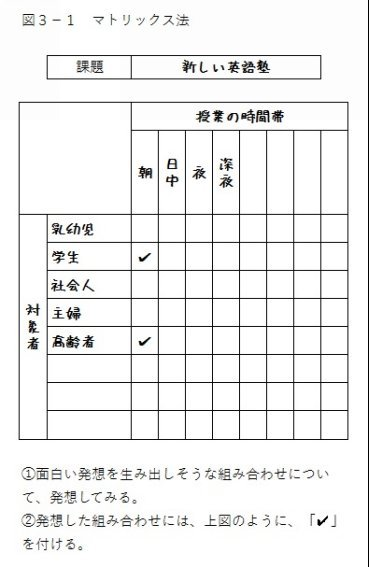
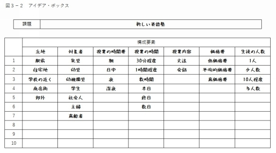
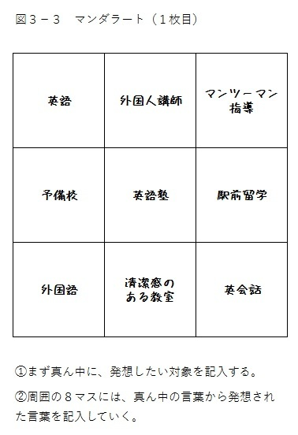
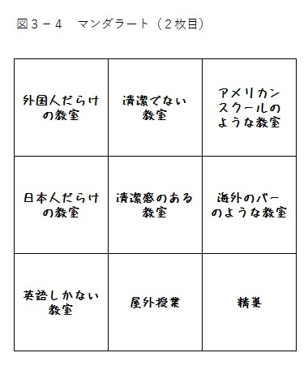
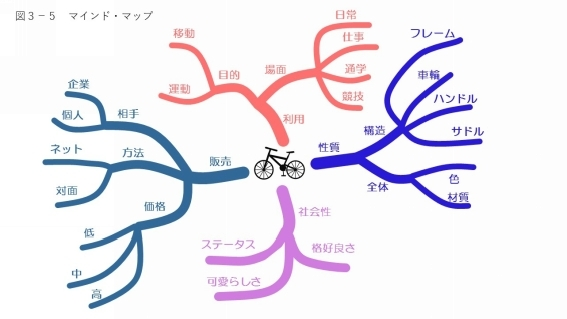
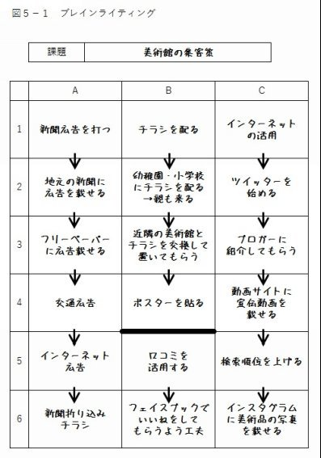

| 「誰でもアイデアを量産できる」発想する技術: 知っておくべき30の発想法をもれなく紹介。ブレストから属性列挙法まで、具体例を交えてわかりやすく解説! | |
| 石井守 | |
| emuzukurieito (2016) | |
「誰でもアイデアを量産できる」
発想する技術
石井 守
私たちは日々、様々な問題・課題に取り組んでいます。
ビジネスの場も、日常生活も「課題解決の連続」です。
ビジネスの場であれば、「新商品はどうするか」「取引先にどのように仕掛けるか」といった比較的大きな課題に取り組むこともあれば、「メールの文面をどうするか」「上司にどう報告するか」といった小さな課題に取り組むこともあります。
また、日常の場面でも、「どんな家を購入するか」といった課題から、「朝ごはんは何を食べるか」といった課題まで、大小さまざまな課題に、私たちは日々何回も取り組んでいるわけです。
さて、私たちが課題に取り組む際には、意識するしないにかかわらず、私たちは必ず「発想」しています。
というのも、課題を解決するには、「①課題を解決するための案を思い浮かべる（発想する）」、「②その中から、良い案を選択する」という２つの段階を、私たちは踏んでいるからです。
私たちは課題を解決するにあたり、このような段階を踏んでいますから、課題を解決するための案をあまり発想できず、しかも不出来な案ばかり発想していては、当然、課題の解決もうまくいきません。
一方で、課題を解決するための案をたくさん、それに、素晴らしい案ばかり発想できれば、当然、課題をうまく解決できる可能性も高まるのです。
仮に、「朝ごはんは何にするか」という簡単な課題があるとします。
発想が乏しければ、例えば、「おにぎりを食べよう」という案しか思い浮かばず、朝食から喜びを感じられず、健康でいつづけることもできません。
一方、発想が豊かであれば、例えば、「朝からステーキを食べてしまおう」「朝から生野菜をたっぷり食べよう」「最近肉ばかりだったから、今日は魚にしてみよう」といった案をたくさん思い浮かべられ、朝食から喜びを感じられ、さらに、健康でいつづける可能性も増えるでしょう。
このような、ごく簡単な課題さえ、発想の豊かさによって、上手く解決できるか否かが左右されます。
ましてや、「新商品はどうするか」「どんな家を購入するか」といった困難を伴う課題を上手く解決するには、発想の豊かさが必要であることは、言うまでもありません。
発想の豊かさが、課題解決の成否を決めるわけです。
読者のあなたが発想の豊かさを手に入れられるように、本書には、次のような特徴を持たせています。
①原理を紹介
何事も、それに上達するにあたり、その原理をおさえることが有効です。
例えば、私の愛好するゴルフでも、「どうしたら真っすぐ飛ぶのか」「どうしたらより長い飛距離が飛ぶのか」といった原理（≒仕組み）をおさえた上で、その原理にかなった練習をする。すると、原理を知らずに、むやみやたらに練習するよりも、よっぽど早く上達するものです。
発想も上達するには、練習が必要ですが、練習だけでなく「原理を知っておくこと」も重要なのです。
②網羅性
発想法の本の中には、数種類の発想法しか掲載されていない本があります。それだけでなく、中には、ブレインストーミングだけ、マインドマップだけといった本も珍しくはありません。
しかし、それでは、課題を解決するのに十分な数の発想法を知ることはできません。病気によって治療法が異なるように、課題によって、適している発想法は異なります。課題によって、発想法は使い分けなければなりません。
本書には約三〇の発想法を掲載しており、代表的な発想法はもれなく知ることができます。本書に載っている発想法を知れば、それぞれの課題に適した発想法を使えるようになることでしょう。
③実践的
発想法を紹介してはいるものの、肝心の使い方が分からない本も少なくありません。
本書では、発想法の使い方も知ることができるよう、使い方を詳細に記述しました。また、必要なものには図を付した他、その発想法を実際に使ってみた具体例も掲載しています。
この本を読めば、読んだ直後からでも、発想法を用いることができるでしょう。
本書は、発想の豊かさが必要なビジネスパーソンの方々にはもちろん、読んでいただきたいと思っています。また、発想の豊かさを必ずしも要求されない（と思われている）学生といった方々にも、この本を読んでいただければと思っています。
発想が豊かになれば、それだけ、日々直面する課題に上手く取り組めるようになり、仕事だけでなく、学業も研究も人間関係も、その他のあらゆる事柄を、成功させられる可能性が増えます。発想が豊かになればなるだけ、あなたの人生も豊かなものになります。
本書には、あなたの発想を豊かにするのに、十分な内容が書かれています。
本書を読み、そして、実践してほしい。
そうすれば、あなたの発想はきっと豊かになり、それに伴い、あなたの人生も豊かになるに違いないでしょう。
本書を読んでいるあなたに限らず、どんな人でも、「うまく発想できるようになりたい」と願っていることでしょう。
では、発想とは何か。ごく簡単な言葉で述べれば「思いつくこと」です。
誰もが「上手くアイデアを思いつけるようになりたい」と願っています。
どうすれば、上手くアイデアを思いつけるようになるでしょう。
そのためには、「原理を知ること」が大切です。
原理とは、大雑把にいえば「仕組み」のことです。
先ほども述べましたが、何事でも、仕組みを知ることが、上達への近道です。
ゴルフであれば、「どういうスイングが、真っすぐなボールの軌道を生み出すか」といった仕組みを知る。水泳であれば、「どういう足の使い方が、泳ぎの速さをもたらすか」といった仕組みを知る。雑談であれば、「雑談はどうすれば盛り上がるか」といった仕組みを知る。このような仕組みを知れば、仕組みにかなった体の使い方・振る舞い方が出来るので、それを上手く行える可能性が増えるのです。
発想に関しても同様です。「上手く発想するための仕組み」を知る。そうすれば、それに適った行動の仕方・頭の使い方をすることができるようになり、上手く発想できる可能性が高まるわけです。
しばしば、「ゼロから発想する」だとか、「何もないところからアイデアを生む」だとかといった表現が使われることがありますが、実際には、そのようなことはありません。
私たちの脳の中には、たくさんの情報・知識が記憶されています。これらの情報が引き出されると、何かを思い出したり、思いついたりします。これらの情報は、実は、何の刺激もなければ、引き出されることはない。これは、脳の仕組み上、そうなっているのです。これらの情報が引き出されるのは、情報を引き出す「刺激」がある時のみなのです。
この「脳の中から情報を引き出す刺激」のことを、心理学ではしばしば、「手がかり」といいます。この手がかりがあって初めて、私たちは何かを思い出したり、思いついたり（発想したり）することができる。発想には、手がかりが不可欠なわけです。
さて、この「手がかり」とは、具体的に何でしょう。
例えば、「自分が目にすること」が手がかりになります。私が作業しているテーブルの上には、水の入ったコップがあります。このコップを見ると、「コップ」だとか「水」だとかといった文字情報が思い浮かびます。見たことが手がかりとなって、何かが発想されるのです。
何も、「見ること」だけが手がかりになるわけではありません。「聞くこと」や「匂い」も手がかりになります。例えば、隣にいる人たちの会話から、何かを発想することがあるでしょう。あるいは、パンの匂いを嗅いで、「今日の昼食はパンにしよう」と思いつくことがあるでしょう。
このような、外部からの情報は、発想を促す手がかりとなります。
また、手がかりは、外部からの情報だけではありません。
自分の内側にある情報も手がかりになります。
例えば、頭の中で「パン」という文字を思い浮かべているとします。そうすると、それに関連した「コッペパン」だとか「フランスパン」といった言葉も、思いつくでしょう。
このように、自分が頭の中で思い浮かべている情報も、手がかりであるわけです。
発想の手がかりは、文字情報だけではありません。
確かに、文字情報が手がかりとなって、何かを発想することはあります。例えば先ほどの例のように、「パン」という文字情報から「コッペパン」「フランスパン」は思い浮かびます。しかし一方で、映像的な情報（イメージ）も、発想のための強力な手がかりとなります。例えば、「フランスパン」のイメージを頭の中に思い浮かべると、「あれ、形が芋虫に似ているな」といったことが思いつくかもしれません。
手がかりは文字情報だけではない、ということにも注意していなくてはなりません。
また、１つの情報だけでなく、複数の情報が手がかりになることもあります。
例えば、「今日の朝食は何にしようか」と考えているとします。その際、「朝食」という言葉だけからだと、良いアイデアが思いつかないかもしれません。しかし、「緑色の背表紙の本」が目についたとして、「緑」という色も発想の手がかりとして使ったらどうでしょう。そうすれば、「今日はホウレンソウをたっぷり使ったスムージーにしよう」だとか「今日はグリーンカレーにしよう」だとかといった発想が生まれてくるかもしれません。
発想の手がかりは１つだけではなく、複数であることもあるわけです。
ここまでの内容を踏まえて、上手く発想するために重要な事柄をまとめておきましょう。
上手く発想するためには、次の点に注意するようにしましょう。
①自分に手がかりを与える
発想には、手がかりが必要です。椅子に座ってウンウンと唸っているだけでは、何も思いつきません。
良い発想を得るためには、外部から自分に情報を入れるなどして、自分に手がかりを与えなければなりません。
②文字情報だけでなく、イメージも手がかりになる
発想ベタな人にしばしば勘違いされていることですが、発想の手がかりは、文字情報だけではありません。映像的な情報（イメージ）も、発想の手がかりになります。
良い発想が浮かばない時には、言葉だけで考えるのでなく、イメージして考えてみる。すると、良いアイデアが出てくることも多いものです。
③外部の情報だけでなく、自分の中の情報も手がかりになる
手がかりは、自分の外側にある情報だけではありません。
自分の内側にある、自分が記憶している情報・知識も、手がかりになります。色々な情報・知識を知っている人が、良い発想をすることが多いのは、そういった理由からです。
④複数の情報の組み合わせが、良い発想を生む
一つの手がかりからアイデアが生まれることもあれば、複数の手がかりから生まれることもあります。
そして、良いアイデアはしばしば、複数のアイデアの組み合わせから生まれるものです。発想法の古典的名著『アイデアのつくり方』には、「アイデアとは、既存の要素の新しい組み合わせ以外の何ものでもない」とまで、書いてあります。
良いアイデアが思いつかない場合には、色々な情報同士を組み合わせてみましょう。きっと、良い発想が生まれるでしょう。
発想の上手い人は、ここで述べた事柄を意識的・無意識的に実践しています。そして、ほぼすべての発想法が、ここで述べた発想のコツを利用しています。
良いアイデアが思い浮かばない時には、①～④を思い出してみましょう。ある人は、「文字情報ばかりで考えていた」ことに気付くかもしれません。ある人は、「一つの情報からのみ、アイデアを生み出そうとしていた」ことに気付くかもしれません。
ここで述べたコツを覚えておくだけでも、あなたはより多くのアイデアを思いつくようになっているはずです。
発想の上手い人がいます。「あいつはアイデアマンだ」と言われる人がいます。
このような人は、他の人が一時間粘って数個のアイデアしか出さない一方で、数分のうちにいくつものアイデアを発想します。しかも、質の高い、独創性の高いアイデアを発想します。
「アイデアマン」と「非アイデアマン」を区分けているものは何でしょう。
才能でしょうか。
才能がない人には、良いアイデアを発想することは出来ないのでしょうか。
結論から言えば、そんなことはまったくありません。
確かに、生まれ持った才能によって、発想が得意な人はいるにはいるでしょう。しかし、大部分の「アイデアマン」は、発想が元々得意であったわけではありません。むしろ後天的な要素------発想の鍛錬であったり、発想に関する知識を得ることであったり------が、大部分のアイデアマンをアイデアマンたらしめています。
このアイデアマンをアイデアマンたらしめている、他の人よりも多く、質の高いアイデアを思いつくための方法が、発想法です。
今の段階で、良い発想のできないあなたも、発想法を知れば、今よりもはるかに多くの良いアイデアを思いつくことができるようになります。
人生は、問題解決の連続です。
先ほども例として挙げましたが、「メールの文面をどうするか」「朝ごはんは何を食べるか」といった些細な問題も含めれば、日に何十回何百回と、私たちは問題解決をしています。
そして、この問題解決のたびに、私たちは発想しています。
たいていの問題は、素晴らしい発想なしに、解決できるものです。
しかし、解決の困難な問題は、優れた発想があって初めて、解決できるものです。また、些細な問題さえも、優れた発想を持っていれば、より良い形で解決することができます。例えば、「仕事において、メールの文面をどうするか」といった些細な課題も、素晴らしい発想があれば、素晴らしい文章を書くことができる。そういうことを続けていれば、社内の評価が上がるかもしれない。それだけでなく、メールをしていた社外の人の目に留まって、引き抜きの話が来るかもしれないわけです。
いずれにせよ、優れた発想があれば、より良い方法で問題を解決でき、自分にとって良い結果がもたらされる。そして、この「優れた発想」は、発想法を知っていれば、生み出すことができるのです。
世の中には、実に多くの発想法があります。
本書で紹介するものだけでも三〇種類以上の発想法があります。
そして、それぞれの発想法には、いくつかのバリエーションがあります。
例えば、ブレインストーミング（複数人で発想していく方法、詳細は後ほど）一つとっても、有名なものだけでも三種類程度のバリエーションがあります。課題の設定の仕方を変えたものを「ゴードン法」と言い、発想と収束を交互に行うスタイルのものを「ストップ・アンド・ゴー・ブレインストーミング」と言い、いくつかのグループが他グループとアイデアを競い合わせながら行う方法を「フィリップス６６法」と言います。
これ以外にも、各組織・個人が、自らで使いやすいように、独自の改良を加えている発想法も見られます。
一説には、四〇〇種類の発想法があると言われていますが、あるいは、より多くの発想法があるかもしれません。これほど、発想法の数は多いわけです。
これほど多い発想法ですから、発想法の分類方法も多岐にわたります。
ある書籍では、人数による分類がなされていたり、ある書籍では発想する対象の種類によって（文字情報かイメージか）分類がされていたりします。あるいは、もっと別の方法で分類されていたりします。
さて、「上手く発想するには、自分に対して『手がかり』を与えることが重要だ」と先ほど述べました。
この「手がかり」によっても、発想法の分類は可能です。そして本書は、この分類の仕方を採用しています。本書における発想法の分類は、次の通りです。
①「課題」から発想していく方法
「課題」とは、「自転車の新商品を考える」といったものです。
課題から発想していく方法は、この「自転車」といった課題自体から、あるいは、「自転車」を分析した結果出てきたものから、発想していく方法です。
例えば、この方法の代表的なものに「欠点列挙法」というものがあります。この発想法は、課題の欠点を分析し、その分析結果から発想していくという方法です。
仮に「自転車」の場合、まず欠点を分析し、例えば、「走行中に傘を手で差してはいけないから、雨に濡れる」「盗まれやすい」という欠点を挙げるとします。それぞれの欠点から、「ビニール製の覆いを付けた自転車」「勝手に動かすとブザーがなる自転車」といった新商品のアイデアを発想するのです。
②「課題以外」から発想していく方法
「課題以外」とは、カタログに載っている商品、街の風景や、辞書の言葉といったものです。
例えば、カタログに載っている商品自体やそこから発想したものと、課題とを組み合わせて、課題解決に役立つアイデアを発想していくのです。
先ほど同様、「自転車の新商品を考える」という課題があるとして、オフィス用品のカタログを発想の手がかりに使うとします。カタログをぱらぱらと見てみて、「応接用の椅子」が目に留まったら、それと課題とを結び付けて、「自転車に座り心地の良い椅子が付いていたら良いのではないか」などと発想するのです。
③「他人の発想」から発想していく方法
周りを見てみると、自分では発想できないような発想をする人がいます。自分でしないような発想に触れると、自分一人では出来ないような発想が、自分から生まれてくることがあります。その特性を活かそうとするのです。
この特性を活かした方法には、ブレインストーミング・ブレインライティングなどがあります。いずれも、第５章で紹介いたします。
属性列挙法とは、課題の属性を列挙し、その属性を発想の材料（手がかり）にする技法です。
この技法の歴史は古く、一九三〇年代から使われています。八〇年以上たった今もなお、使われ続けている技法です。
①準備する
次のものを準備してください。
・紙
・筆記用具
発想を上手く行うには、アイデアを「書き留める」ことが重要です。
人は、短い時間には数個の事柄しか覚えておけないので、書き留めないと、せっかくの良いアイデアも忘れてしまうからです。
書き留めるものは、紙でなくても構いません。ホワイトボードでも構いません。一人で発想する場合には、ワードなどの文書作成ソフトなどの書き留めても構いません。
また、属性列挙法を行う人数ですが、一人でも複数人でも構いません。
複数人で行う場合には、誰かしら課題に詳しい人がいた方が良いです。その方が、属性を挙げる作業がはかどるからです。
②課題を決める
次は課題を決めましょう。
例えば、
課題 「自転車の新商品を考える」
としてみましょう。
この課題は、この課題に取り組んでいる人の目に付くところに書いておきましょう。課題を目立たせておいた方が、属性を思いつきやすいためです。
さて、この「自転車の新商品を考える」という課題は、本書において、発想法を用いる際の具体例として多用していきます。みなさんも一緒に、新しい独創的な自転車を考えていきましょう。
③課題の属性を列挙する
属性。あまり聞きなれない言葉かもしれません。性格・性質・特徴・特性といった言葉と同じ意味だと捉えていただいて、問題ありません。
この属性は、次の３つに分けて捉えることが一般的です。
●名詞的属性
名詞で表現される特徴です。
「全体として、どういう形状をしているか」「どのような部分からなっているか」「材料は何か」「製法は何か」といった特徴です。
●形容詞的属性
「重い」「丸い」といった形容詞で表現される、性質・状態に関する特徴です。
●動詞的属性
「どのような働きをするか」といった機能上の特徴のことです。
もちろん、ここに当てはめにくい属性が出てくることもあります。こういうものも、紙にメモしておきましょう。
私たちの目的は、属性を正確に列挙することではありません。発想の手がかりをたくさん挙げることだからです。
属性を挙げる段階で、しばしば、「属性が思いつかない」という事態が起こることがあります。こういう場合は、実物を見てみましょう。また、インターネットなどで調べてみるのも良いでしょう。
さて、「自転車」が課題であれば、次のように属性を挙げていきます。
●名詞的属性
・タイヤ
・金属製
・サドル
・変速レバー
・ハンドル
......
●形容詞的属性
・速い
・平均時速二〇～三〇km
・色はさまざま
・単色が多い
・重い
......
●動詞的属性
・移動する
・止まる
・駐車する
・一人が乗れる
・複数人乗れる
......
ここに挙げた属性を見てみると、分類にあっていなさそうなものもあると思います。例えば、「『一人が乗れる』という属性は、形容詞的属性ではないの？」と思われる方もいるかもしれません。
しかし、それでよいのです。厳密に名詞・形容詞・動詞的属性に分類することが目的ではなく、あくまで発想するための材料を挙げることが目的だからです。
ここで重要なことは、属性を挙げる数です。属性を挙げる数が、その後の発想できるアイデアの数を左右します。
素晴らしいアイデアを発想したいのであれば、入念に属性を挙げる必要があります。
④属性を元にアイデアを出す
ここで挙げた属性を元に、アイデアを発想していきます。
アイデアを発想する際には、「属性（特性）を伸ばすには？」「属性（特性）を変える・修正すると？」と考えると、良いアイデアが浮かぶことが多いです。
自転車の例に戻ります。
「タイヤ」という属性から、アイデアを思い浮かべようとします。すると、例えば、次のような発想が得られるかもしれません。
発想 「パンクしないタイヤ」「大きなタイヤ」「その日の気分で、タイヤを手軽に交換可能な自転車」
はじめは、つまらないアイデア・バカげたアイデアしか思い浮かばないかもしれませんが、それでよいのです。
そして、思いついたアイデアは消してはいけません。つまらない、バカげたアイデアも、優れた発想の材料になることがあるからです。
また、１つの属性からでなく、複数の属性を組み合わせて発想するのも有効です。
例えば、「重い」という属性と「金属」という属性とを組み合わせる。すると、「丈夫で軽量な炭素繊維を使った自転車などは、持ち運びも簡単で良いな」などと発想するかもしれません。
欠点列挙法とは、課題の欠点を分析し、その欠点からアイデアを発想していく方法です。
この技法は、製品・サービスを改善するための案を発想する際に、特に役立ちます。
①準備する
ここでも次のものを用意してください。
・紙
・筆記用具
もちろん、一人で行う場合には、ワード等を用いても構いません。
人数は一人でも複数人でも良いです。ただ、複数人で行う方が効果的です。人によって、異なる欠点が思い浮かぶためです。
②課題を決める
例えば、先ほど同様、
課題 「自転車の新商品を考える」
という課題を設定してみます。
③課題の欠点を列挙する
欠点を列挙しましょう。
列挙する際に重要なことは、「どんなに些細な欠点でも挙げてしまうこと」です。複数人で行う場合には、他人の挙げた欠点を批判してはいけません。
この「他人の発想（発言）を批判してはいけない」は、集団で発想する際に重要なことです。批判してしまっては、発想や発言をしにくい雰囲気になってしまいます。また、些細な事柄であっても、よりよい発想を生み出すきっかけになることが、しばしばあるからです。
「自転車」の例の場合、次のような欠点が挙げられるでしょう。
・ブレーキのワイヤーが切れることがある
・手で傘を差しながらの運転は違法
・よく盗まれる
・タイヤがパンクする
・下り坂での運転が危険
......
欠点が、あまり思い浮かばないこともあるかもしれません。
そういう場合には、よく使っている人に聞くのが良いです。例えば、顧客にアンケートを取るのも有効でしょう。
④欠点を元にアイデアを出す
欠点を元に、アイデアを発想していきます。
欠点は一つずつ見ていっても良いですし、「特に重要だ」と思われる欠点を選び、そこから発想していっても良いです。
例えば、先ほど挙げた「ブレーキのワイヤーが切れることがある」という欠点から、それを改善・克服するためのアイデアを発想していくとします。
すると、
・切れないワイヤー付ける
・ワイヤーが一本切れた場合、予備のワイヤーが機能するようにする
・ブレーキレバーを引かなくても、ブレーキできるようにする
というような発想が出てくるでしょう。
「欠点列挙法」と似た技法に、「希望点列挙法」というのがあります。
欠点を挙げる代わりに、「理想のあり方」を挙げるのです。
この発想法の良い点は、常識にとらわれずに発想できる、という点です。
一人、または複数人で、課題の理想像を列挙していきます。
例えば、自転車の場合だと、「盗まれにくい自転車」といった現実的な理想像から、「ペダルを踏まなくても進む自転車」といった現実離れした理想像まで、様々な理想像を挙げていきます。
そして、ここで挙がった理想像を元に、新しいアイデアを発想していくわけです。
形態分析法とは、発想する対象の構成要素を挙げ、その構成要素が取りうるバリエーションを洗い出す。そして、出てきたバリエーションを組み合わせることで、アイデアを発想する方法です。
この技法は、宇宙工学の権威として知られるフリッツ・ズイッキーが、一九四〇年代のはじめに考案した方法です。欧米では今もなお、使われ続けています。
①準備する
ここでも、同じものを用意します。
・紙
・筆記用具
人数は、一人でも何人でも構いません。
②課題を決める
ここでは、次のような新しい課題を設定してみましょう。
課題 「新しい英語塾を考える」
この課題も今後、例として出していきます。みなさんも一緒に「新しい英語塾」を考えてみましょう。
③独立変数（構成要素）を洗い出す
独立変数とは、この課題を構成する要素のことです。
「英語塾」の場合、例えば、
・立地
・対象者
・授業の時間帯
・授業内容
といった要素が挙げられるでしょう。
④各要素における、変化の可能性を洗い出す
独立変数（構成要素）ごとに、ありうる変化を挙げていきます。
先ほどの例だと、
・立地：駅前、住宅地、学校の近く、商店街、郊外
・対象者：乳幼児、学生、社会人、主婦（主夫）、高齢者
・授業の時間帯：朝、日中、夜、深夜
・授業内容：文法、会話
といった、変化の可能性を挙げていきます。
⑤変化の可能性を組み合わせて、発想する
変化の可能性を一つずつ組み合わせ、発想していきます。
つまり、この例だと、「駅前、乳幼児、朝、文法」→「駅前、乳幼児、朝、会話」→「駅前、乳幼児、日中、文法」→......→「商店街、高齢者、夜、会話」という組み合わせを一つずつチェックし、そこからアイデアを生み出していきます。
中には、まったく需要がないと思われる組み合わせもあります。例えば、「学校の近く、社会人、日中、文法」といったものです。
一方で、中には、新たな優れた発想をもたらしそうな「住宅地、高齢者、朝、会話」といった組み合わせも見られます。この組み合わせからは、
「高齢者には、朝の早くから起きている人も多いと聞くな。その高齢者向けに、朝の早い時間に授業を受けられる英会話教室を開いたら、流行るかもしれない。高齢者に特化した英語塾というのも、あまり聞かないから、面白いな」
などと、発想できるかもしれません。
①独立変数（構成要素）を絞る
形態分析法の本来のやり方は、考えうるすべての組み合わせをチェックするというものです。
先ほどの「英語塾」の例で、すべての要素を組み合わせると、実に二〇〇種類もの組み合わせになります。
これらすべての組み合わせを確かめていては、時間がかかってしまいますから、独立変数（構成要素）は、二つから三つ程度に絞るのが推奨されています。
②すべての組み合わせについて発想しない
本来のやり方は、すべての組み合わせについて発想するというものですが、中には、「どうしようもない」組み合わせもあります。例えば、「学校の近く、学生、夜、文法」という組み合わせ。この組み合わせは、あまりにもありきたりで、考える必要のない組み合わせです。
このような組み合わせは、考えるだけ時間の無駄です。
「面白いアイデアを生み出しそうな組み合わせだけを選んで発想する」というのが、効率的な方法でしょう。
変化の可能性（駅前、住宅地、学校の近くなど）をカードに書き込み、独立変数（構成要素）ごとに分類しておきます。
そして、それぞれの構成要素からカードを一枚ずつ抜いて、組み合わせを作り、その組み合わせから発想していくのです。
独立変数（構成要素）を二つだけ選んで、各変数で取りうる変化を洗い出す。それを二次元のマトリックスにし（図３―１）、重要だと思われるブロックを絞り込む。そして、絞り込んだブロックごとに、アイデアを発想していくという方法です。
図３―１は、英語塾の例で、独立変数を「対象者」と「授業の時間帯」に設定して、マトリックスを作った例です。この中から、面白い発想を生み出しそうなブロック――例えば、「高齢者―朝」「学生―朝」――をいくつか選び、そのブロックごとに発想していくのです。
形態分析法より組み合わせの数は減りますが、「目に見える形で表せる」という点で優れた技法です。

アイデア・ボックスでは、形態分析法と同じように、構成要素（形態分析法で言うところの独立変数）ごとに、とりうる可能性を書き出します。そして、これを表にします。表に書かれた可能性を組み合わせて、アイデアを発想していきます。
形態分析法との違いが分かりにくいと思いますので、さっそく具体的な方法を説明します。
①準備する
次のものを用意してください。
・表の書いた紙
・筆記用具
アイデア・ボックスでは、表を使います。
表は、紙に手書きしても良いですし、エクセルなどで作っても構いません。
表中の、一つ一つのセルの大きさは、最低でも、高さ３センチ、幅５センチ程度はあるのが良いです。文字を一〇文字程度は、記入するからです。多人数でやる場合には、ある程度離れた位置からでも文字が見えるように、セルはもう少し大きくするのが良いです。
②課題を決める
課題 「新しい英語塾を考える」
形態分析法との違いを知るためにも、形態分析法で取り上げたものと同じ課題で見ていきましょう。
③構成要素を洗い出す
形態分析法と同じです。
構成要素を洗い出していきます。
「英語塾」の場合、先ほど挙げたものにいくつか追加して、
・立地
・対象者
・授業の時間帯
・授業の時間
・授業内容
・価格帯
・生徒の人数
といった要素を挙げます。
④各要素における、変化の可能性を洗い出す
これも形態分析法と同じく、構成要素ごとに、ありうる変化の可能性を挙げていきます。
そして、挙げたものを表にまとめます（図３―２）。

⑤変化の可能性を組み合わせて、発想する
ここが、アイデア・ボックスと形態分析法とで異なる点です。
形態分析法では、すべての構成要素から、何かしら一つずつは変化の可能性を選んで、組み合わせを作っていたと思います。例えば、「駅前、乳児、朝、三十分程度、文法、低価格帯、一人」という組み合わせを作って、そこから発想していたと思います。
一方、アイデア・ボックスでは、すべての構成要素から、必ずしも一つずつ、変化の可能性を選ぶ必要はありません。つまり、変化の可能性の中から何か一つ――例えば「乳児」だけ――を選んで発想しても良いですし、何か三つ――例えば「住宅地」「主婦」「高価格帯」――を選んで発想しても良いのです。
また、「一つの構成要素から複数の可能性を選んで良い」というのも、形態分析法と異なる点です。アイデア・ボックスでは、例えば、「対象者」という構成要素から、「乳児」「幼児」「高齢者」という三つの可能性を選んで、そこから発想しても良いのです。
今回の「英語塾」の例の場合、「学生」「数日」「会話」「低価格帯」を組み合わせて、「学生を、夏休みといった期間中に数日間、英語のみの環境で生活させる。場所は、国内の宿泊施設。留学よりもはるかに安い価格で、留学と同様の効果を狙う。『格安。国内で短期留学』などと謳えば、かなり多くの人の興味を引けるのではないか」などと発想できるわけです。
ポジショニングとは、「位置付けること」です。
課題を構成する要素を一つないし二つ選び、軸を描く。「その軸上のどこに位置付けるか」を考えることによって、新しいアイデアを得ようとする方法が、ポジショニング法です。
①準備する
いつも通り、紙と筆記用具を用意してください。
②課題を決める
課題 「新しい英語塾を考える」
③構成要素を一つまたは二つ選ぶ
課題を構成する要素を一つまたは二つ選びます。
例えば、構成要素のうち「受講者の平均年齢」という特性を選んでみましょう。
④ポジショニングする
「受講者の平均年齢」で、一つの軸を描いてみてください。
数値が左側ほど低く、右側ほど高い軸です。
多くの英語塾は、左側～中央あたりに位置しています。つまり、学生中心であったり、社会人が中心であったりします。
そんな中で、右の方にポジショニングしたらどうでしょう。すると、「受講者の平均年連が最も高い塾」というアイデアが発想されます。高齢者の方々に焦点を絞って、英語塾を展開する。なかなか、面白いアイデアかもしれません。
①軸の設け方が、ポジショニングの成否を決める
軸の設け方は重要です。軸の設け方次第で、ポジショニングがうまくいくか否かが決まるからです。
例えば、「生徒の人数」という軸を設けても、ポジショニングはうまくいきません。「生徒の人数が一人」のところにポジショニングしたところで、マンツーマン指導を行っている塾はすでに多数あります。一方で、生徒の人数が多いところにポジショニングしたとしても、それは売りにならないからです。
②意味のあるポジショニングをする
時々、「そんなポジショニングをして、何か意味があるの？」と思えるようなポジショニングを見かけます。
あなたも次のようなポジショニングを見かけたことはないでしょうか。
「二番目に美味しい○○」
これで食べてみたいと思いますか？ きっと、そうは思わないでしょう。
ポジショニングをするのなら、「意味のある」ポジショニングをする。心に留めておきましょう。
逆設定法とは、課題に関する常識を列挙したうえで、その常識を逆転したものを設定する。その「常識を逆転させた設定」＝「逆設定」を元に、発想していこうとする発想法です。
常識から離れた「逆転の発想」を得やすい発想法です。
①準備する
紙と筆記用具を用意しましょう。
②課題を決める
仮に「自転車の新商品を考える」という課題を考えるとします。
③課題の常識を列挙する
自転車の常識を挙げてみましょう。自転車の常識は、「属性列挙法によって挙げた属性」から考えるのも良いでしょう。
例えば、自転車の常識として、次のものが挙がったとします。
・前に走る
・サドルがある
・速い
・普通、単色である
・人が乗る
④常識を逆転して設定する
先ほど挙げた常識を逆転させると、次のようになります。
・後ろに走る
・サドルがない
・遅い
・単色でない
・人は乗らない
⑤「常識を逆転させた設定」から発想する
先ほど挙げた「常識を逆転させた設定」＝「逆設定」から、アイデアを発想してみましょう。
・後ろに走る→「後ろにも走れる自転車」
・サドルがない→「立ち漕ぎ専用の自転車」「サドルの代わりに、フカフカの椅子のついた自転車」
・遅い→「下り坂で自動減速する自転車」
・単色でない→「カラフルな自転車」
・人は乗らない→「ペット用の自転車」
この例からわかるように、常識からは離れつつも、意外に現実的なアイデアが思いつくものです。
三×三の九つのマスの中心に課題（発想の対象）を書き、そこから発想されるものを周囲の八つのマスに記入していく。さらに発想したいものがあれば、新たな三×三のマスを用意し、その真ん中に発想したいものを書き、そこから発想されるものを周囲の八つのセルに記入していく。これを繰り返すのが、マンダラートです。
三×三に並んだマス目の形がマンダラに似ていることから、マンダラートと呼ばれています。
①準備する
次のものを準備します。
・マンダラ 十枚程度
・筆記用具
マンダラのマス目の大きさは、四～五センチ四方くらいが良いです。内容によっては、十文字程度を一マスに書く場合もあるからです。
マス目の大きさをそれくらいにすると、Ａ４サイズの用紙にマンダラは二つ書けます。
エクセル等で作っても良いですが、十枚程度でしたら、手書きの方が早く作れます。
マンダラートを行う人数ですが、一人で行うことが多いです。想像してみるとわかると思いますが、マンダラを何人もの人数で埋めていくのは、滑稽に見えると思います。
②課題を決める
次に課題を設定してやります。
「新しい英語塾を考える」に取り組みましょう。
③最初のマンダラを埋める
まず、中心のマスに、発想をしたい対象を記入します。例えば、「英語塾」と記入します。
続いて、周囲の八つのマスを埋めていきます。
「英語塾」という言葉から、例えば、「英語」「外国語」「マンツーマン指導」などという言葉を発想し、図３―３のように、マンダラを埋めていきます。

ここで、必ず守るべきことは、「八つすべてのマスを埋める」ということです。すんなりとマスが埋まらなくても、そこでやめず、うんうんと唸ってみる。すると、何とかマス目は埋められるものです。
このように唸ってみる過程で、思いがけない発想を得ることもあるのです。
この例から知ることができるように、マス目に入れる言葉は、単語である必要はありません。フレーズでも良ければ、文でも良いです。
要するに、発想の手がかりになれば良いのです。
④二枚目以降のマンダラを埋める
一枚目のマンダラが埋まったら、二枚目のマンダラに取りかかります。
二枚目のマンダラの中心のマスには、一枚目のマンダラの中で気になった言葉を、転記します。そして、一枚目と同じ要領で、周囲の八マスも埋めていきます。一枚目からは「清潔感のある教室」という言葉を選びました。この言葉から、「アメリカンスクールのような教室」「海外のバーのような部屋」という言葉を発想していくのです（図３―４）。

続いて三枚目。三枚目のマス目の中心には、一枚目・二枚目の中から気になった言葉を選び、転記します。そして、残りの八マスも埋めていきます。
四枚目以降も同様で、それまでに書いたマンダラの中から、さらに発想したい言葉を選び、真ん中のマス目に転記し、また、八つの言葉を発想していくのです。
この作業を、「もう発想したい言葉はないな」と思えるまで、続けていきます。
⑤マンダラを眺めながら、発想していく
マンダラを書いていく最中に、課題解決に役立つ色々なアイデアが思いついたことでしょう。あるいは、課題解決には役立たなくても、何か役に立ちそうなアイデアが思いついたかもしれません。それらのアイデアは、忘れないように、紙やカードなどにメモしておきましょう。
マンダラを書き終えた後は、出来上がったマンダラを眺めながら、課題解決に役立つアイデアを発想していきます。
出来上がったマンダラを眺めながら、アイデアを発想していきましょう。
「英語塾」の例の場合、例えば、図３―４の「アメリカンスクールのような教室」「海外のバーのような教室」から、次のような発想が出来るかもしれません。
「英語塾といえば、白基調の部屋に学習机と椅子が並んでいるような教室ばかりだな。部屋の雰囲気をアメリカンスクールだとか、海外のバーだとかのようにするだけで、差別化できるかもしれない。そして、『本格的な雰囲気の中で英語を学べます』などと言えば、流行るかもしれない」
他にも、マンダラを眺めながら発想していけば、面白いアイデアは色々と浮かぶものです。
①マス目は八つすべて埋める
繰り返しになりますが、マス目はすべて埋めましょう。例えば、六つしか埋まらずに、すぐには残りが埋まらなくても、考え続けましょう。あれこれ考えているうちに、何とかマス目は埋まるものです。そして、マス目が埋まるだけでなく、あれこれ考えていると、良い発想も浮かんでくるものなのです。
②マス目は文でも単語でも良い
マス目に入れるのは、文でも単語でも良いです。発想に役立つのであれば、何でも良いのです。
発想できない人の中には、自分の思考に制限をかけている人が多く見られます。制限は取り払いましょう。発想している最中に、自分の思考に制限をかけるのはやめましょう。
マンダラートの場合、「マス目に埋めるのは単語だけにしよう」だとか「マス目に埋めるのは文だけにしよう」だとかといった、制限を加えるのはやめましょう。
思考に制限を加えてしまうと、良い発想は生まれてきません。
マインド・マップは、無地の紙の真ん中に発想したい対象のイメージを置き、そこから発想されるものを放射状に描きながら、アイデアを出す方法です。
一九六〇年代後半に、イギリスの著述家トニー・ブザンが提唱した方法で、現在では世界中で使用されています。
①準備
次のものを用意してください。
・紙
・色ペン（または、色鉛筆）
紙のサイズは、Ａ４以上のものが良いです。マインド・マップでは、アイデア同士を「枝」と呼ばれる線でつないでいくほか、絵を描いたりもするので、それなりに大きな紙である必要があるのです。
色ペンの種類ですが、五種類程度以上のことが多いです。
②中心に発想の対象となるイメージを置く
まず、紙を横向きに置きます。その中心に発想の対象となるイメージを描きます。
課題を「自転車の新商品を考える」とする場合、自転車のイメージを描きます。
中心に描くものは、提唱者が言うには、「イメージ」――課題を表すイラストなど――でなければなりません。正しくマインド・マップを実践したいのであれば、イメージを描きましょう。実際、イメージで描く方が、発想も湧きやすいという利点もあります。
③中心のイメージの周りに、放射状に枝を描き、その枝の上に、中心イメージから発想されるイメージを描く、または言葉を書く
中心のイメージから、放射状に枝を伸ばしていきます。この中心から伸ばす枝は、「太く」描いてください。
その枝の上に、中心のイメージから発想されるイメージを描くか、または、言葉を書きます。
④マインド・マップを眺める
自分の描いたマインド・マップを眺めましょう。
何かしら発想が浮かぶでしょう。
⑤イメージ・言葉から発想されるものがあれば、さらに枝分かれさせ、その枝の上に、イメージを描く、または言葉を書く
太い枝を枝分かれさせてください。
そして、枝分かれさせた枝の上に、④の段階で発想したイメージ・言葉を書き加えていきます。
この枝は、細い枝として描きます。
⑥ ④と⑤を繰り返し、アイデアを発想していく
枝の上にイメージ・言葉を描いたら（書いたら）、マインド・マップを眺めます。
さらにイメージ・言葉が思いうかんだら、さらに枝分かれさせ、その上にイメージ・言葉を置いていきましょう（図３―５）。

①提唱者トニー・ブザンの定める12のルール
・無地の紙を使う
・用紙は横長で使う
・用紙の中心から描く
・テーマはイメージで描く
・ワードは単語で描く
・ブランチは曲線で
・強調する
・関連づける
・独自のスタイルで
・創造的に
・楽しむ
正確なやり方でマインド・マップを行うのであれば、これらのルールを守る必要があります。
②発想しやすくするには
そうは言うものの、これらのルールを守っていては、発想のみに集中することはできません。発想するときに、書き方にとらわれていては、発想は妨げられてしまいます。
ですから、「発想の道具」としてマインド・マップを使うのであれば、必ずしも、これらのルールを守る必要はないだろうと、私は思います。
つまり、
・中心のテーマはイメージで描かずに、言葉で書いても、
・縦長の紙またはノートを使っても、
・ブランチは直線で書いても、
良いと、私は思います。
発想するときには、発想のみに集中した方が、良いアイデアは生まれやすいのです。
街中を歩いていて、あるいは、人と雑談をしていて、ふと良いアイデアが生まれることがあるでしょう。実際、課題から離れた情報が手がかりとなって、良い発想が出てくるということがあります。ありふれた例ですが、「万有引力の法則」といった偉大なアイデアも、「リンゴが木から落ちる」という、一見すると課題から離れたようなイメージが手がかりとなって、発想されたアイデアなのです。
課題から離れた様々な情報――ニュース、インターネット検索、雑談など――に積極的に触れ、そこから発想しようとする方法が、情報シャワーです。
①準備
次のものを用意します。
・紙、ノートまたは情報カード
・筆記用具
この発想法では、屋内だけでなく屋外でも、情報を浴びます。その情報が手がかりとなって、屋外でも発想することがあります。発想したものはメモしておかなくては忘れてしまいますから、屋外でもすぐにメモを取れるようにしておかなければなりません。
ですから、屋外で情報を浴びる場合には、持ち運びやすいノート、または、情報カードを持ち歩くのが良いでしょう。
ノートであれば、ポケットに入るサイズのものが良いでしょう。
「情報カード」とは、情報を書き込むためのカードのことです。罫線が入っているものもあれば、無地のものもあります。サイズはまちまちで、Ｂ６、５×３センチ、名刺大のものが良く使われています。屋外でも使用する場合には、名刺大のものを、専用の情報カード入れまたは名刺入れに入れて、持ち歩くのが良いでしょう。
②課題を決める
同じような課題例で飽きてきた頃だと思いますので、次の新しい課題についても考えてみましょう。
課題 「美術館の集客策を考える」
③情報のシャワーを浴びる
様々な種類の情報を、シャワーのように浴びましょう。
シャワーとして浴びる情報は、普段接しているような情報だけに絞ってはいけません。普段は接していないような情報にも触れるようにします。また、課題に密接に関係している情報だけでなく、課題への関連の度合いが低い情報にも、触れるようにしましょう。普段は接していないような、課題への関連性が低い情報こそ、新たなアイデアを生み出すことも、しばしばあるからです。
情報を浴びる代表的な方法は、次に挙げる通りです。
●読書
ジャンルを絞らず、様々なジャンルの本を読んでいきます。
読む本は、興味のあるもので構いません。興味のあるものでないと読書が捗らず、効率的に情報を浴びることができないからです。
●ニュース
日々報じられるニュースからは、様々な種類の情報を得ることができます。新聞、インターネットのニュースサイトや、テレビのニュース番組などを見、日々のニュースに触れましょう。しばしば、ニュースから良いアイデアが生まれることがあります。
●会話
他人との会話から、発想が生まれることがあります。特に、自分の知らないような知識を持つ人との会話は効果的です。他人からもたらされる、自分の知らない知識が発想の誘発剤となり、新しいアイデアが生まれることも、よくあるからです。
また、自分と他人とで会話する以外にも、他人同士の会話を聞くのも有効です。他人同士の会話――特に、自分が普段接しないような人同士の会話――を聞いていると、自分では考えたことのないようなことが話されていることもよくあります。
●外出
外出先からも、発想に役立つ情報を得ることができます。
漫然と外出していてはいけません。「目にしたものを発想に活かすのだ」という意識を持って初めて、発想に役立つ情報に気付くことができます。
外出先としては、課題に密接に関係したところに出かけても、そこから得られる発想は限定的でしょう。ですから、あなたが「美術館の集客策を考える」という課題に取り組んで入る場合、美術館を巡ってばかりいてはいけません。遊園地やデパートにこそ、新たな発想の材料が転がっているかもしれません。
●その他
様々な種類の情報に触れる方法として、ウィキペディアやウィクショナリーの「おまかせ表示」機能を使うという方法もあります。
説明は不要かもしれませんが、ウィキペディアとはウェブサイト上で利用できる百科事典サービス、ウィクショナリーとはウェブサイト上で利用できる辞書サービスのことです。
これらのサービスには、「おまかせ表示」という機能があります。この機能を使うと、機械がランダムに選んだ記事が表示され、自分が普段触れないような情報にも触れることができるわけです。
④浴びた情報から、発想を広げていく
情報を浴び、課題の解決に役立つアイデアが発想できれば、必ずメモしておきましょう。
また、課題の解決に必ずしも役立たなさそうなアイデアであっても、何かしらに役立ちそうなアイデアが発想されたら、それもメモしておきましょう。そのようなアイデアから、課題解決に役立つアイデアが発想されることもあるからです。
今回の課題「美術館の集客策を考える」について、考えてみましょう、新たな情報を浴びるため、普段出かけている美術館・博物館ではなく、あるテーマパークに出かけたとします。
そのテーマパークで、様々なものを見、様々な情報に触れていきます。例えば、着ぐるみによる出迎え、様々なアトラクション、年間パスポート、パレード、特定の世界観を表現したレストラン、統一された制服、様々な出店......。
このような様々な情報に触れ、課題の解決に役立ちそうなアイデアを発想していきます。今回の課題の場合、「自分の美術館にも着ぐるみを導入したら、話題になるのではないか」「ある美術品の世界観を表現したレストランは面白いのではないか。それか、美術品のレプリカを置いたレストランも面白いのではないか」などと発想するのです。
自分が過去に考えたこと、発想したことから、新たなアイデアが発想されるということが、しばしばあります。
考えたこと、発想したことは、何もしなくては忘れてしまいます。ですから、ノートなどにメモをしておきます。このノートを見返すことによって、新たなアイデアを発想しようというのが、ここで取り上げる方法です。
発想を武器に、人類に役立つ発明をしてきた偉人たちも、この方法を採用してきました。
例えば、ルネサンス期に、数学・幾何学・芸術・天文学といった様々な分野で顕著な業績を残したレオナルド・ダ・ヴィンチも、多くのメモを取り、時にそのメモを見返すことによって、発想を広げていきました。驚くべきなのはそのメモの数で、実に一万枚以上のメモを、ノートに記したといいます。
また、発明王と言われるトーマス・エジソンも多くのノートを残しています。その数は三五〇〇冊。新たなアイデアを思い浮かべたい時には、ノートを見返し、電話機・白熱電球・映写機といった様々な発明品の発想に役立てていったのです。
①知識を蓄積する
まず、知識を蓄積しなければなりません。知識を蓄積しなければ、そこから発想することもできません。
さて、発想において、知識の蓄積は極めて重要です。ですから、これについては、第６章で詳しく説明することにします。ここでは、ごく基本的な、最低限守るべきことだけを記載しておくことにします。
●頭の中にだけ蓄積すればよいのではない
後々、自分の役に立ちそうなアイデアは、必ず何かに書いて、残しておくようにしましょう。
頭の中にアイデアをとどめておくのは避けなければなりません。アイデアを記憶しておこうとしても、忘れてしまうかもしれない。あるいは、いざ思い出したいときに――例えば、発想の役に立てたいときに――思い出せないかもしれません。
●ノートに書く必要はない
ダ・ヴィンチやエジソンのように、ノートに、アイデアを書きためる必要はありません。例えば、ワードといった文書作成ソフトや、エクセルといった表計算ソフトに書きためていっても良いわけです。アイデアは何に書きためておくべきか、についても、第６章で詳述します。
●外出中でもアイデアをメモできるように
出歩いているときに、アイデアが思い浮かぶことがあります。メモしておかなければ、ふとしたきっかけで忘れてしまいます。
外出をする際には、すぐにメモを取れるようにしておきましょう。常に、ポケットサイズのノートや情報カードと、筆記用具を持ち歩くようにしましょう。
②読み返す
アイデアが思い浮かばないときには、アイデア・考えを書きためたノート（あるいは、ワード・エクセルファイルなど）を見返します。
ノートに書いてある内容を、課題と結び付けながら、あるいは、課題とは切り離しつつ読んでいって、新しいアイデアを発想していくのです。
様々な商品の載ったカタログ。勤務先でよく見かけるでしょう。
そのカタログに載っている商品・絵と、あるいは商品・絵から連想したものと、課題とを結び付けて、新しいアイデアを発想していこうとする方法が、カタログ法です。
①準備する
次のものを用意してください。
・紙や筆記用具など、発想や考えを書き留められるもの
・カタログ
カタログは一冊でなく、複数冊を用いることもあります。
また、カタログだと、そこに載っている画像には偏りがあるものです。例えば、家具のカタログであれば、家具ばかりが載っているでしょう。目にする画像の幅が狭ければ、それを手がかりに発想されるアイデアの幅も、狭いものになってしまいます。
ですから、カタログを用いる代わりに、様々な画像・イラストなどを集め、分類したものを自分で作成しておき、それを用いるということもあります。
②課題を決める
課題 「自転車の新商品を考える」
これについて、考えていきましょう。
③カタログに載っている画像・イラストから、連想していく
この段階では、カタログを見ます。あるいは、自ら画像を収集・分類したものを印刷した紙や、プロジェクターで投影した画像を見て、そこから連想していきます。
ここで行う連想は、必ずしも、課題に結びついたものである必要はありません。
ここでは仮に「家具・インテリア」のカタログを見たとします。その場合、次のように連想されていきます。
「ふた付き容器」→「ふた」「透明な容器」
「ワイングラス」→「ガラス製」
「タブレットスタンド」→「タブレットホルダー」「スマートフォンホルダー」「ペットボトルホルダー」
「折り畳みチェア」→「折り畳み」
「ウッドチェア」→「木製」「木目調」
④課題と結び付け、アイデアを発想する
カタログに載っている画像・イラスト自体と、あるいは、画像・イラストから連想されたものと、課題とを結び付けて、アイデアを発想していきます。
「ふた付き容器」
↓（発想）
「自転車を入れる箱はどうだろう。箱の中に入れておけば、家の外に置いておいても、自転車が盗まれにくくなるな」
「ふた」
↓（発想）
「自転車のかごにふたを付けるのはどうか。かごの中の荷物の盗難を防げるし、雨が降っても荷物が濡れなくなるな」
「タブレットホルダー」「スマートフォンホルダー」「ペットボトルホルダー」
↓（発想）
「色々なホルダーが標準でついている自転車は良いかもしれない」
「安価なホルダーはあまり売られていないから、安価にホルダーを作れたら、売れるだろう」
「木製」「木目調」
↓（発想）
「木製の自転車なんて、あまり見かけないな。流行るかもしれないな」
「木製では耐久度が十分でないかもしれない。木目調のデザインにするだけでも、売れるかもな」
第３章の、例えば「属性列挙法」といった発想法からでは思いつかないようなアイデアがいくつも出てきました。発想法によって、発想されるアイデアが異なってくるというのも、なんだか面白いものです。
「死者の書」とは、古代エジプトで、冥福を祈り死者とともに埋葬された文書のことです。
この発想法では、「死者の書」または象形文字が集まったものを用意し、そこに載っている象形文字から、課題解決に役立つアイデアを発想していきます。
方法は、カタログ法とほぼ同じです。カタログの代わりに、死者の書を用いるのです。
象形文字は、「象形文字」「ヒエログリフ」などとウェブ上で検索すると、いくつも見つけることが出来ます。
普通の発想法に飽きた方は、「死者の書」のような一風変わった発想法を使ってみるのも良いでしょう。
街中には、様々な人・モノがあります。そんな街中に出て、人・モノを観察し、観察したものを書き留めておく。そして、街中を歩いた際の記憶や、書き留めたものを元に、新しいアイデアを発想する方法が、タウンウォッチング発想法です。
①準備
最低限、次のものを用意しなければなりません。
・ノートと筆記用具など、発想や考えを書き留められるもの
これらは、街中を歩きながらでも、メモを取れるものでなければなりません。ですから、Ａ４ノートやルーズリーフではいけません。
メモを取るには、スマートフォンのメモ帳機能を使うのも良いでしょう。しかし、アイデアはしばしば、文字でなく、イラストで書き留めたいときもあるものです。スマートフォンのメモ帳機能だと、イラストは描きにくいです。ですから私は、ノートや情報カードを用いています。
アイデアは「書き留める」以外にも、「音声として残す」という方法もあります。具体的には、ボイスレコーダーを使用するのです。最近だと、スマートフォンの録音機能で代用できますから、新たにボイスレコーダーを購入する必要はないでしょう。
また、デジタルカメラを持ち歩くのも有効です。写真として、あるいは動画として、発想に役立ちそうなものを残しておくのです。
②課題を決める
ここでは、仮に次の課題に取り組んだとします。
課題 「新しい英語塾を考える」
③歩きながら観察し、メモしていく
「新しい英語塾を考える」。これを、頭の片隅に置きながら、色々なものを観察していきます。
観察する際には、課題の解決に役立ちそうなところから優先的に観察していくのが、効率的というものです。
今回の課題の場合、競合の英語塾を観察してみる。流行っているお店・流行っていないお店を観察してみる。話題の観光地・話題になっていない観光地を観察してみる。人の集まっている場所・集まっていない場所を観察してみる。......。
このように、課題の解決に役立つものから優先的に、様々な場所を観察していくのです。
そして、観察したことは、どんどんメモしていきます。
加えて、観察したことだけでなく、観察したことから感じたこと・考えたこと・発想されたことなども、メモしていきます。課題の解決に直接は役立たなそうなことでも、何かしらに役立ちそうなことはメモしていきます。
このメモは、必ずしも、文・文章である必要はありません。完璧主義の方は、しばしば文・文章の形でメモを取ろうとしますが、そうである必要はありません。書き留める形式にとらわれると、メモを取るのに時間がかかってしまいます。また、形式に縛られて、自由な発想が生まれにくいものです。
メモは、後から見返して、観察した内容や、その内容から考えたことなどが、思い出せれば良いのです。つまり、フレーズでも単語でも、イラストでも良いわけです。
観察する際には、「様々な視点」から観察するように心掛けましょう。
つまり、「自分が子どもだったらどうか」「自分が高齢者だったらどうか」「自分が異性だったらどうか」「自分が外国人だったらどうか」などと考えて、観察していくのです。
さて、今回の「新しい英語塾を考える」という課題の場合、この課題を念頭において、街中を巡ってみましょう。
仮に、課題の解決に役立つ発想を得るため、「話題のお店」を、英語塾とは関係のなさそうなところを含めて、巡っていくことにしたとします。その場合、次のような事柄が、観察されたり、考えられ発想されたりするでしょう。観察したこと、そこから感じたり考えたり発想したりしたことは、すかさずメモしていきましょう。
アイスクリーム屋
↓（メモ）
「店員が歌って踊りながら、アイスを盛り付けてくれる」
「話題を呼ぶには、目新しい要素と組み合わせるのが良いか」
ニューヨークスタイルのホットドッグ屋
↓（メモ）
「日本にいながら、本場を経験できる」
「店の雰囲気も含めて本場」
オーストラリア発のブリトー屋
↓（メモ）
「ブリトーなんて聞いたことのないものが流行っている」
「耳新しいものも話題になる」
④街中にいるうちに、アイデアを発想してみる
街中にいるうちに、アイデアを発想してみます。時間がたっていない方が、感情や記憶が残っているためです。
カフェなどの、落ち着いて発想できそうなところに入りましょう。そこで、メモしたノートや、撮影した写真などを見返していき、課題の解決に役立ちそうなアイデアを発想していくのです。
例えば、「ニューヨークスタイルのホットドッグ屋」を思い返し、アイデアを発想していきます。
「日本にいながら、本場を経験できる」
→「日本人は、本場に弱いのでは」
→「特に、欧米スタイルのものに弱そうだな」
→「教室の雰囲気も含めて、欧米風にしたら、流行りそうだな」
このように、発想をしていくのです。
⑤会社・自宅に戻り、発想していく
会社や自宅に戻り、街中で集めたメモや写真を整理しながら、アイデアを考えてみましょう。
情報を整理してみると、また新たな考えが浮かんでくるものです。今回の場合だと、「目新しさ・耳新しさがあると、やはり話題になるのだな。英語塾にも、何かしらの『新しさ』を付けないといけないな」というような考えが浮かんでくるのです。
また、収集したメモや画像は、自分だけでなく、他の人とも共有しましょう。自分では思いつかないようなアイデアも、期待できるでしょう。
「色」を一色決め、その色の着いた物を探します。そして、その物自体、あるいは、その物から連想されたことから、アイデアを発想していく方法が、カラーバスです。
この方法のメリットは、普段は目を向けない物にも、目を向けるきっかけが与えられることです。普段目にしない物も目にし、そこからの発想が促されますので、新たなアイデアが生まれやすいのです。
①準備
次のものを用意します。
・発想や考えを書き留められるもの
この方法も「タウンウォッチング発想法」と同じように、外出時に行います。
ですから、ポケットに入るサイズのノートや、名刺大の情報カードなど、持ち歩きやすいものがお勧めです。
②課題を決める
課題 「美術館の集客策を考える」
この課題に取り組んでみます。
③「色」を一色決める
色を決めます。「青」でも「赤」でも「黄色」でも良いです。
仮にここでは、「緑色」に決めたとします。
④街を歩きながら、「自分が決めた色」の着いたものを探す
街中を歩きながら、あるいは、電車・バスに乗りながら、自分が決めた色の着いたものを探していきます。
今回の場合、「緑色」のものを探していきます。すると、色々な種類のものが目に飛び込んできます。
例 緑の生い茂る木、靴、非常口のサイン、公衆電話、付せん、自動車......
⑤「自分が決めた色」の着いた物から連想する
「自分が決めた色」の着いたものから、連想を広げていきます。
例えば、
緑の生い茂る木
↓（連想）
「豊かな自然」
靴
↓（連想）
「歩く」「歩きやすい」
↓（連想）
「バリアフリー」
非常口のサイン
↓（連想）
「災害」「目立つ」
公衆電話
↓（連想）
「遠くでも話せる」
付せん
↓（連想）
「ショップの商品」
自動車
↓（連想）
「乗り物」「移動」
このように、関連した言葉やイメージを思い浮かべていきます。
⑥発想していく
「自分が決めた色」の着いた物自体、または、そこから連想されたものから、課題の解決に役立つアイデアについて考えていきます。
例えば、次の通りです。
緑の生い茂る木・豊かな自然
↓（発想）
「うちの美術館には、たくさんの木が生えている。そこをもっとアピールしたら、一定の集客があるのではないか」
目立つ
↓（発想）
「美術館自体を目立つような色・形にしたら、集客につながるのではないか」
「美術館の前に、うちの美術館を代表する美術品の巨大なレプリカでも置いて、目立たせれば、集客につながるのではないか」
遠くからでも話せる
↓（発想）
「美術館にいなくても、うちの美術品を楽しめるサービスを、例えばアプリなどで提供したら、面白いかもな」
付せん・ショップの商品
↓（発想）
「付せんの一枚一枚に、美術品が描いてあったら、斬新だし面白いな」
「どこかのお店とコラボして、うちの美術品の描いてある商品（バッグだとか傘だとか）を売り出してもらったら、集客につながるだろう」
乗り物・移動
↓（発想）
「美術館の中をカートなどで移動しながら、美術品を見られるサービスを提供したら、流行るかもしれない。足の不自由な方の来場も増えるだろう」
このように、発想していきます。
ここでももちろん、発想したアイデアや考えたことは、メモしておかなければなりません。そうしなければ、せっかくのアイデアも忘れてしまいます。
①目につきやすい色を選ぶ
例えば、「こげ茶色」を選んではいけません。こげ茶色を選んでしまうと、「泥」や「肉の焦げ目」などしか目にすることがなくなるでしょう。
そうではなく、目につきやすい色――青色・赤色・黄色・灰色など――を選ぶようにするのです。
②「目についた物自体だけから発想する」ことは避ける
目についた物からだけ発想しようとしても、アイデアは生まれにくいものです。
例えば、「非常口のサイン」から、「美術館の集客策」の新しいアイデアを発想しようとしても、良いアイデアは得にくいでしょう。
ですから、目についた物から、連想するようにしましょう。「非常口のサイン」であれば、「災害」「目立つ」といった言葉・イメージを連想しましょう。
そして、連想したものからも、アイデアを発想するようにするのです。
「エクスカーション」とは、動物・職業・場所といった、課題とは関係のない事柄を想像し、そこから得られた連想・着想を元に、アイデアを発想しようとする方法です。
例えば、動物を何かしら選び、その動物について想像し、連想されることをいくつも挙げていきます。それらを課題と結び付けて、課題の解決に役立つアイデアを発想していきます。
エクスカーション（excursion）とは、「小旅行」のことです。今いるところから少し離れて（小旅行をして）、そこから着想を得ようというわけです。
エクスカーションの代表的な方法は３つあり、動物エクスカーション法・職業エクスカーション法・場所エクスカーション法です。
ここでは、動物エクスカーション法を取り上げ、具体的な方法を確認していくことにします。
①準備する
準備するものは、次の通りです。
・紙
・筆記用具
②課題を決める
いつも通り、課題を決めます。
課題：「自転車の新商品を考える」
③動物を思い浮かべる
動物を一匹、思い浮かべてください。
思い浮かべる動物は、何かしら特徴を持っている動物が良いです。また、自分がある程度知っている動物の方が良いでしょう。その方が、その動物から連想を広げやすいからです。
もちろん、あまり知らない動物を選んでも良いですが、その場合には、その動物について調べるようにします。
ここでは例として「カエル」を選んでみます。
④動物から連想する
動物から、言葉・イメージを連想してみます。
「カエル」の場合、次のようなものが連想されるでしょう。
・吸盤が発達している
・陸と水中の両方で生活する
・特徴的な鳴き声
・井の中の蛙、大海を知らず
・緑色
・飛び跳ねる
・目が飛び出ている
・オタマジャクシから形が変わる
・関節が柔らかい
......
このような連想を、最低でも一〇個くらいは出したいものです。ここで出てくる連想の数が、アイデアを発想できる量にも影響してくるからです。
連想した事柄は、紙に書き出しておきましょう。
⑤動物自体、または、連想から、アイデアを発想していく
動物自体から、あるいは、動物から連想されたことから、アイデアを発想していきましょう。
「自転車の新商品を考える」という課題に関連付けると、次のようなアイデアが思い浮かぶでしょう。
カエル
↓（発想）
「正面から見ると、カエルに見える自転車なんて新しいな」
「カエルに限らず、何かしらの動物に見える自転車なんて、面白いな」
吸盤が発達している
↓（発想）
「ハンドルのところに吸盤を付けたら、雨天時に手が滑りにくくなって、良いかもしれない」
陸と水中の両方で生活する
↓（発想）
「ある程度の水嵩のところでも走行できる自転車は、洪水の時などに役立つだろう。例えば、ペダルとサドルの位置が高いところにあれば、水嵩が多少高くても、走行できるかな」
特徴的な鳴き声
↓（発想）
「特徴的な音のベルは面白いな」
「カエルが場合によって鳴き分けるように、ベルの音も鳴らし分けられたらどうだろう」
井の中の蛙、大海を知らず
↓（発想）
「広い視野を持って運転できるようにしたら、安全性が増すな。自社の自転車は、バックミラーを標準で装備するようにしようかな」
動物と関連付けることで、色々と面白いアイデアを思いつくことができました。
職業を一つ選びます。例えば、「医者」を選んだとします。
自分が医者になりきって、医者になった様子を想像し、目についたものを書き留めていきます。あるいは、医者から連想されるものを書き留めていきます。
すると、次のような言葉を書き留められるでしょう。「聴診器」「注射」「患者」「高給取り」「白衣」......。
そこから、課題解決に役立つアイデアを発想します。
高給取り
↓（発想）
「高給取りか。高級志向の人に訴えかけるような自転車はあまりないな。例えば、どこかのブランドとコラボした自転車なんて、話題性がありそうだな」
白衣
↓（発想）
「白衣。白衣を着ながら自転車に乗ると、白衣がめくれる。スカートがめくれにくい自転車があれば良いな。自転車の前に、風よけを着けた自転車なんてどうだろう」
場所を一か所選びます。
国内でも国外でもどちらでも良いです。ただ、行ったことがあったり、テレビで良く見知ったりしているなど、その場所に関する知識が多い方が、連想しやすいです。
選んだ場所を旅行する過程を想像してみます。そして、想像上で目にした出来事・物をメモしていきます。
例えば、「飛行機に乗る」「雪が降っている」「寒い」「雪道」「スキー場」「スキーで斜面を下る」といった内容を、メモできるでしょう。
そこから、発想していきます。
寒い
↓（発想）
「寒い中、自転車を運転するのはしんどいな。せめて風よけがあれば良いな」
雪道
↓（発想）
「自転車は雪道に弱い。自転車用のチェーンがあったらどうだろう」
スキーで斜面を下る
↓（発想）
「自転車をしながら、雪山の斜面を下るスポーツなんてどうだろう」
この発想法からも、なかなか面白い発想が生まれるものです。
自分の発想を刺激しそうな言葉の書いたカードを作ります。そのカードをランダムに引き、書かれている言葉から連想を広げていく。その連想から、新しいアイデアを発想していく方法を、刺激語法と言います。
①準備
次のものを用意します。
・刺激語を記したカード
・紙
・筆記用具
まず、自分の発想を刺激してくれそうな言葉の書いたカードを作ります。
作る枚数は数百枚程度です。
カードのサイズは、単語を書くだけなので、名刺大かそれより小さいもので良いでしょう。
このカードは一度に作ってしまっても、日々書きためていくのでも構いません。いずれにせよ、幅の広い発想を得たいのでしたら、数百枚程度の枚数を作成しましょう。
カード以外にも、他の発想法と同様に、紙・筆記用具などの、発想や思考を書き留めるためのものを用意します。
②課題を決める
いつも通りです。課題を決めましょう。
課題 「新しい英語塾を考える」
③カードを引く
カードをランダムに１枚引きます。
仮に「牛丼屋」という単語の書いたカードを引いたとします。
④カードに書いてある言葉から連想を広げる
カードに書いてある言葉から、連想を広げます。
連想を広げる場合、第３章で紹介した属性列挙法やマンダラートを用いるのも有効です。
「牛丼屋」からは、例えば次のような言葉が連想されるでしょう。
「牛丼屋」
↓（連想）
「速い」「安い」「旨い」「飲み」「お持ち帰りサービス」「食券」「カウンター席」「食事を提供」
④連想した言葉から、アイデアを発想していく
カードに書かれた言葉や、その言葉から連想した言葉と、課題とを結び付けて、課題の解決に役立ちそうなアイデアを発想していきます。
「速い」
↓（発想）
「高速で英語が学べる」
「ごく短時間で、ＴＯＥＩＣの点数が大幅にアップする英語塾はどうか」
「ごく短時間で、外国人と会話できるようになる英語塾なんかはどうか」
「飲み」
↓（発想）
「牛丼屋でお酒が提供されているように、英会話教室でもお酒を提供する。仕事帰りのビジネスマンを対象に、お酒を提供しながら、リラックスした状態で英会話を学んでもらうなんて、どうだろう」
①カードには発想を生み出しやすい言葉を書く
発想を生み出しやすい言葉もあれば、そうでない言葉もあります。
例えば、「三三七拍子」なんて言葉からは、良い連想が生まれず、良いアイデアも出てこないでしょう。
カードを作るのであれば、良い発想を促す言葉を、そこに書かなくてはなりません。
課題によって、発想を促しやすい言葉が異なります。
例えば、「レジャー」に関する課題を解決したいのであれば、レジャーに関連した言葉が書かれたカードの枚数が多い方が良いでしょう。「インバウンド」「文化」「癒し」といった言葉の書かれたカードを用いた方が、良い発想が生まれやすいでしょう。
また、どんな課題に対しても、良い発想を生み出しやすい言葉があります。
マーケティングの用語――例えば、「ポジショニング」「ブルーオーシャン」「ロイヤリティ」など――は、良い発想を生み出しやすいです。マーケティングの用語でなくても、「コミュニケーション」「コラボレーション」「人脈」といった言葉は、優れた連想を生みそうです。
このような「汎用的」な言葉を日々蓄積していけば、それだけ良い発想を生み出しやすくなります。
②辞書を用いても良い
カードを作るのが面倒だと思われる方もいるでしょう。
そういう方は、辞書を用いても構いません。
適当なページを開き、適当な単語を見つける。そして、そこから連想していく。その連想と、課題とを結び付けて、課題の解決に役立ちそうなアイデアを発想していくのです。
発想を生み出しやすい質問の載った「チェックリスト」を用意し、そこに載っている質問に答えながら、アイデアを発想していく方法です。
世の中には、様々なチェックリストや、それに類するものがあります。ここではまず、「ださく似たおち」リストを使う方法を紹介します。
①準備する
次のものを用意してください。
・「ださく似たおち」リスト
・紙
・筆記用具
「ださく似たおち」は、アイデアの発想を促す質問の頭文字です。それぞれの質問は次の通りです。
だ：代用できないか？
さ：さかさまにしたら？
く：組み合わせたら？
似：似たものはないか？
た：他の用途はないか？
お：おおきくしたら？
ち：ちいさくしたら？
このリストに載っている質問と、課題とを結びつけることで、新しいアイデアを発想していきます。
②課題を決める
課題 「自転車の新商品を考える」
ここでも同じ課題に取り組みます。同じ課題でも、発想法が異なれば、発想されるアイデアも異なります。皆さんも一緒に、考えてみましょう。
③リストの質問に答えながら、発想していく
リストの質問を課題と関連付け、その質問に答えていきます。次のような具合です。
だ：自転車について、代用できないか？
↓（発想）
「サドルを座り心地の良いものに置き換える」
「ベルをブザーに置き換える」
さ：自転車について、さかさまにしたら？
↓（発想）
「ペダルを逆向きに漕ぐと、後ろに進める自転車」
「ペダルを逆向きに漕いでも、前に進める自転車」
く：自転車について、組み合わせたら？
↓（発想）
「メーターを組み合わせて、消費カロリーを表示できるようにする」
「ペンキを組み合わせて、自転車で走行したところにペンキの線が残るようにする。新しいアート作品ができるかも」
に：自転車に似たものはないか？
↓（発想）
「（自転車に似ている）自動車に付いているエアバッグを自転車に付けたらどうか」
「自動車のハンドルを自転車に付けたら、ユニークではないか」
た：他の用途はないか？
↓（発想）
「蓄電器を取り付けて、電気の蓄積もできるようにする」
「自転車の後ろに大きなブラシを付けて、グラウンドの整備をできるようにする」
お：おおきくしたら？
↓（発想）
「ライトを大きくして、自転車全体が光るようにする」
「タイヤのチューブを大きくして、よりクッションが効くようにする」
ち：ちいさくしたら？
↓（発想）
「ちいさいカゴがいくつか着いていたら、ペットボトルを入れたりするのに便利ではないか」
「自転車を最低限の大きさにまで小さくして、持ち運びが容易なものを作ったら便利ではないか」
オズボーンは、ブレーンストーミングの考案者です。
「オズボーンのチェックリスト」は、彼の著書の中から、発想に役立つ切り口を９つ抜き出し、リストにしたものです。
九つの項目は、次の通りです。
①Put to other uses（他の用途は？）
②Adapt（応用したら？）
③Modify（変えてみたら？）
④Magnify（大きくしたら？）
⑤Minify（小さくしたら？）
⑥Substitute（代用したら？）
⑦Rearrange（位置を変えたら？）
⑧reverse（逆にしたら？）
⑨Combine（組み合わせたら？）
この質問に答えながら、課題の解決に役立つアイデアを発想していくのです。
ＳＣＡＭＰＥＲは、「オズボーンのチェックリスト」を覚えやすく改良したものです。それぞれの文字が、発想を促す質問の頭文字になっています。
Ｓ：Substitute?（代用したら？）
Ｃ：Combine?（組み合わせたら？）
Ａ：Adapt?（応用したら？）
Ｍ：Modify? Magnify? Minify?（修正したら？ 大きくしたら？ 小さくしたら？）
Ｐ：Put to other uses?（他の用途は？）
Ｅ：Eliminate?（除いたら？）
Ｒ：Reverse? Rearrange?（逆にしたら？ 編成し直したら？）
フェニックスは、アメリカの情報機関であるＣＩＡが開発したチェックリストです。
当初は、「ＣＩＡのエージェントが、直面している問題を多角的に捉えられるようにすること」を意図して開発されましたが、今では発想を促す質問集として、アメリカを中心に世界中で使われています。
チェックリストは、課題編と計画編の二つに分かれており、それぞれ二〇程度の質問から構成されています。
課題編の質問は課題を分析する際に、計画編の質問は課題の解決策を考える際に、用います。
それぞれの質問の日本語訳は、次の通りです。
●課題編
・なぜ問題を解く必要があるか？
・問題を解くことから得られる利益は何か？
・知らないことは何か？
・まだ理解していないのは何か？
・あなたの持っている情報は何か？
・課題でないものは何か？
・情報は十分か？ 不十分か？ 過剰でないか？ 矛盾点はないか？
・課題を図表にすべきか？ 図解にすべきか？
・課題のどこに境界線を引くべきか？
・課題をいくつかの部分に分けられるか？ 書き表わせるか？ 部分同士の関係性はどうか？ 課題の中で不変な点は何か？
・この課題を以前にも見たことがあるか？
・この課題を少し違った形で見たことはないか？ 似た問題を知っているか？
・同じ、あるいは似ている未解決部分のある、類似した課題について考えてみよ。
・関連した課題で、すでに解決したものはないか？ それを使えないか？ その解決手段を使えないか？
・課題を言いかえられないか？ 何通りに言い換えられるか？ より一般化できないか？ より具体化できないか？ 言い換え方を変えられないか？
・想像できる最高の場合、最悪の場合は何か？
●解答編
・課題全体を解決できるか？ 一部分ならどうか？
・どんな解決像が好ましいか？ それを描けるか？
・知らない部分がどれほどか分かるか？
・持っている情報を有益なものに変化させられないか？
・すべての情報を使っているか？
・課題にとって大事な要素は全て考慮に入れたか？
・課題解決の過程を、いくつかの段階に分けられるか？ それぞれの段階の正しさを、確認できるか？
・アイデアを生み出すために、どんな発想法を使えるか？ いくつの発想法を知っているか？
・結果が分かるか？ 何種類の結果が想定されるか？
・何種類の方法で、課題を解決しようとしたか？
・他人は何をしたか？
・解決方法を直感できるか？ 結果を検証できるか？
・何がなされるべきか？ どうやってなされるべきか？
・どこで行なわれるべきか？
・いつ行われるべきか？
・誰が行うべきか？
・今あなたがやるべきことは何か？
・誰が何に対して責任を負うのか？
・何か他の課題を解決するために、この課題を利用できるか？
・この課題を独自なものにしている特徴は何か？
・どんな指標が、進捗の度合いを最もよく表すか？
・成功したとき、その成功をあなたはどうやって知るのか？
課題の解決に役立つキーワードを決め、そこから連想されることを挙げる。連想されたことの仕組み・背景を探り、その仕組み・背景と課題とを結び付けて、アイデアを発想する方法を、ＮＭ法と言います。
この発想法は、元金沢工業大学教授の中山正和氏により開発された方法です。開発者のイニシャルを取って、ＮＭ法と呼ばれています。
ＮＭ法には、ＮＭ法Ｈ型・ＮＭ法Ａ型・ＮＭ法Ｔ型といった様々な種類のものがあります。
ここでは、その中でも特に使い勝手の良いＮＭ法Ｔ型を紹介します。
①準備する
いつも通りです。次の物を用意します。
・紙
・筆記用具
②課題を決める
課題を決めます。
ＮＭ法Ｔ型は、物の発明・改良に使われる技法ですので、今回も次の課題に取り組みます。
課題 「自転車の新商品を考える」
③キーワードを決める（ＫＷ：Key Word）
課題の本質を表す言葉を挙げます。
物であれば、機能を表す「動詞」や、性質を表す「形容詞」を挙げます。
通常、２つ以上のキーワードを挙げます。
キーワード 「走る」「回転する」
④類比を発想する（ＱＡ：Question Analogy）
キーワードを思い浮かべ、その機能・性質を持っている事例を思い浮かべます。
例えば、「走る」の場合、「犬」「豪腕投手の投球」というのが挙げられます。
また、「回転する」の場合、「コマ」「地球の自転」が挙げられるでしょう。
ここで挙げる事例も、２つ以上挙げることが多いです。挙げる数が多いほど、後に発想されるアイデアの数も多くなります。
⑤背景を探る（ＱＢ：Question Background）
④の段階（ＱＡ）で類比として思い浮かべた事例の背景・仕組みについて考えます。「何が起きているのか」「どうなっているのか」「なぜそうなっているのか」を考えるのです。
例えば、「走る」「犬」の場合、その背景・仕組みは、「犬が前足・後足を交互に前後させる」となります。
「走る」「豪腕投手の投球」であれば、「豪腕投手の素早く振られた腕から、球が放られる」とでもなるでしょう。
また、「回転する」「コマ」であれば「指や紐などで回される」となり、「回転する」「地球の自転」であれば「地軸を中心に、少し傾きながら回る」というようになるでしょう。
ここでは、背景・仕組みを一つずつしか挙げていませんが、複数挙げても構いません。
⑥アイデアを発想する（ＱＣ：Question Conception）
⑤の段階（ＱＢ）で出された背景・仕組みを見て、課題の解決に応用できないかを考えます。
例えば、次のように発想していきます。
「犬が前足・後足を交互に前後させる」
↓（発想）
「地形に合わせて、車輪が前後したり、左右したりする」
「豪腕投手の素早く振られた腕から、球が放られる」
↓（発想）
「外から推進力が与えられれば、自転車も速く走れるだろう」
「指や紐などで回される」
↓（発想）
「足だけでなく、手の力でも車輪を回せるようにする」
「地軸を中心に、少し傾きながら回る」
↓（発想）
「地面の傾斜に合わせて、車輪が傾くようにする」
このようなアイデアを、次々と紙やカードに書いていきます。
⑦評価する
複数出したアイデアを評価し、課題の解決に役立ちそうなものを選びます。
そして、具体的な解決策を考えだします。
今回の場合、⑥の段階（ＱＣ）で出された「地形に合わせて、車輪が前後したり、左右したりする」「地面の傾斜に合わせて、車輪が傾くようにする」というアイデアから、「地形に合わせて、車輪が前後左右に動いたり、傾いたりする自転車を作ってみてはどうか。走行中の安定性が増すかもしれない」という具体的な解決策を考えだすのです。
課題の対象となっているものと似たものを見つけ、そこから発想していく方法です。
自然界からヒントを探すことが推奨されています。自然界からヒントが見つかり、偉大な発明に繋がった例がいくつも見られます。例えば、ボーイング社の「高揚力翼」は、「飛び立つ時の鳥の羽の形状」からヒントを得たものでした。
「新しい自転車を考える」という課題の場合、「ダンゴムシ」や「乗馬」といったものから、ヒントを得ようとします。
そうすると、「ダンゴムシ」からは「球型のタイヤの着いた自転車」が発想されます。「乗馬」からは「サドルの代わりに鐙が着いていたら格好良いのでは」「ハンドルの代わりに手綱が着いていたらどうだろう」などというアイデアが生まれるのです。
課題の対象となっている物に、自分自身がなりきって、あるいは、他の人がなっているのを観察して、課題の解決に役立つアイデアを発想する方法が、パーソナルアナロジー法です。
この発想法は、一人で行う場合もあれば、複数人で行う場合もあります。
一人の場合、自分でその物になりきり、色々と想像していきます。複数人の場合、物になりきった人を観察して、そこからアイデアを膨らませていきます。
ここでは、一人の場合のやり方を紹介します。
①準備
次のものを用意します。
・紙
・筆記用具
・ボイスレコーダー
紙・筆記用具は、思いついたことを書き留めるために用います。
ボイスレコーダーの用途については、後述します。
②課題を決める
次の課題について、考えてみましょう。
課題 「美術館の集客策を考える」
③課題について調べる
課題について、よく調べましょう。
本やインターネットを利用して課題について調べる。あるいは、物であれば手に取ってみる。今回の「美術館」の例であれば、美術館の中を歩き回って、色々と観察してみるようにしましょう。
課題について良く知っていなければ、なりきって想像を広げることはできません。
④対象物になりきって、想像を広げる
対象物になりきって、色々と想像してみます。
「自分は美術館。なんで人が来ないのだろう」
「自分は美術館。来ない人にインタビューしてみたら、どう答えてくれるかな」
「自分は美術館。自分の欠点はどんなところかな」
このようなことを、ひたすら想像します。
目を開けたままだと想像しにくければ、目を瞑るのも良いでしょう。
そして、想像した内容を書き留めていきます。
あるいは、書き留める際に目を開けると想像が途切れてしまう、というのであれば、ボイスレコーダーに思いついた内容を吹き込むというのも良いでしょう。
想像している時に、良さそうなアイデアが思いついたら、もちろんそれも書き留めるか、録音しておくかしましょう。
今回の課題の場合、美術館になりきって想像してみたら、次のようなことに気づくかもしれません。
「僕の中にいるスタッフさん、みんな不愛想だったな」
「多くの人が、敷地内に入らずに、僕の前を素通りしていったな。僕が美術館だって、知らないのかもな」
「最近外国人が興味深そうに敷地内を覗いていたけど、結局入らなかったな」
⑤発想していく
一通り想像をしたら、発想していく段階です。
メモを見返しながら、あるいは、録音を聞きながら、発想していきます。
先ほどの気付きから、例えば、次のようなアイデアが生まれるでしょう。
「僕の中にいるスタッフさん、みんな不愛想だったな」
↓（発想）
「スタッフ教育を徹底し、顧客満足度を上げ、リピーターを増やそう」
「スタッフに何かプレゼントをして、楽しい気分で接客してもらおう」
「多くの人が、敷地内に入らずに、僕の前を素通りしていったな。僕が美術館だって、知らないのかもな」
↓（発想）
「美術館だと分かるように、看板などを出そう」
「入口にスタッフを立て、敷地内に人を誘導してもらおう」
「最近外国人が興味深そうに敷地内を除いていたけど、結局入らなかったな」
↓（発想）
「外国人が入らなかったのは、ここが美術館だと分からなかったからかもしれない。入口に、美術館だと分かるような外国語の案内表示を設置しよう」
「外国語に対応していないと思ったから、入らなかったのかもしれない。『複数言語に対応している』ことが分かる案内表示を設置しよう」
取り組む課題の中に含まれる要素を、それと同じようなものに置き換えることで、新たなアイデアを得ようとする発想法のことです。
これではどういう方法か分からないと思いますので、具体的な方法をご覧ください。
①準備
・紙
・筆記用具
これらを用意します。
②課題を決める
引き続き、同じ課題に取り組みます。
課題 「美術館の集客策を考える」
③課題中の要素を「等価」のものに置き換える
課題の中に含まれる要素を、同じような他のものに置き換えます。
「等価」と書かれてはいますが、等価である必要はありません。そもそも、「どういった物が等価なのか」が分かりません。「等価」でなく、「同じようなもの」で構いません。
置き換える前に、課題の中に含まれる各要素について、「同じようなもの」を挙げていきます。
今回の例の場合、「美術館」と「集客策」の２つの要素の「同じようなもの」は、次の通りです。
「美術館」と同じようなもの→博物館、遊園地、デパート、薬局など
「集客策」と同じようなもの→特定の商品の売上増加策
あまり似通ったものに置き換えても、つまらない発想しか生まれません。例えば、美術館を博物館に置き換えてしまってはいけません。
さて、今回の場合、次のように課題を置き換えてやりましょう。
「薬局内で販売しているオムツの売上増加策を考える」
④置き換えた課題について、解決策を考える
「薬局内で販売しているオムツの売上増加策」について、考えてみましょう。
次のようなアイデアが出てくるでしょう。
「オムツのポップを目立たせる」
「オムツを店内の目立つところに配置する」
「オムツを期間限定で値下げをする」
「オムツを買った方に、期間限定で何かプレゼントする」
⑤置き換えた課題で思いついた解決策を、本来の課題に応用する
④の段階で出したアイデアを、本来の課題に応用します。
今回の場合、次のような考えが思い浮かぶでしょう。
「オムツのポップを目立たせる」「オムツを店内の目立つところに配置する」
↓（発想）
「露出が足りなかったのかもしれない。広告を出すか、ＳＮＳなどを利用して宣伝するのが良いだろう」
「オムツを期間限定で値下げをする」
↓（発想）
「美術館の期間限定値下げなんて聞いたことないが、効果があるかもしれない」
「オムツを買った方に、期間限定で何かプレゼントする」
↓（発想）
「チケット購入者に期間限定で、オリジナル絵はがきプレゼント」
「入館してくれた方に期間限定で、美術館内レストランのドリンク一杯プレゼント」
普通に考えたのではなかなか思いつかないアイデアを、思いつくことができました。
ブレインストーミングは、アメリカの広告代理店ＢＢＤＯ社の副社長アレックス・オズボーンが、一九三〇年代に作った発想技法です。
当初は広告代理店で作られましたが、現在では、あらゆる業界、あらゆる人に使われています。
この技法は、６人前後の集団で行うのが理想的です。
次の４つのルールを守りながら、集団でアイデアを発想していきます。
①Go for quantity（量を求めよ）
②Withhold criticism（批判は控えよ）
③Welcome wild ideas（大胆な発想を歓迎せよ）
④Combine and improve ideas（発想を結び付け、改善せよ）
これらのルールは、集団のメンバー同士で発想を抑制してしまうのを防ぎ、発想を刺激し、集団全体の創造性を増加させることを意図したものです。
①～④のルールは、ブレインストーミングをする時に限らず、アイデアを発想する時にはどんな時にも役立つルールです。
覚えておくと良いでしょう。あるいは、アイデアを発想する時には、これらのルールを書いたものを、目につくところに置いておくのが良いでしょう。
これらのルールを守りながら、集団でアイデアを出し合っていく技法が、ブレインストーミングです。
①準備する
次のものを用意します。
・ホワイトボードまたは模造紙
・筆記用具
・テーブル
・４つのルールを書いた紙
アイデアを、参加者全員が見えるようにするために、ホワイトボードや模造紙に書いていきます。
テーブルは、全員の顔を見渡せやすい円形・楕円形が好ましいです。
４つのルールを書いた紙は、メンバー全員の見えるところに貼っておくなり、置いておくなりしておきましょう。
この技法を行うのに推奨されている人数は、６人前後です。
このうちの一人をリーダーとします。リーダーは、事前に課題についてよく考えておくようにします。そして、ブレインストーミングの最中は、基本的にはアイデアを出さず、メンバーの発言を促進することに専念します。
また、一人は書記として、アイデアを書き留めます。人数が５人以下といった少ない時には、リーダーが書記を兼任しても、構いません。
リーダー・書記以外のメンバーで、アイデアを出し合っていきます。メンバーに、事前に課題について考えてきてもらうと、スムーズにブレインストーミングを始められます。
②課題を決める
ブレインストーミングに限りませんが、課題は大きすぎてはいけません。
ある程度の具体性を持たせるようにしましょう。具体性を持っていて、頭の中で物・様子を想像できるものの方が、発想しやすいためです。
③自由に発言する
メンバー同士、自由に発言していきます。
そして必ず、４つのルールを守りながら、アイデアを出し合っていきます。
つまり、質にこだわり過ぎず、アイデアの数を求めるようにする。他人の出したアイデアに対してダメ出しをしない。自分の発想にも制限を設けず、大胆だと思われるアイデアも言ってしまう。そして、他人の出したアイデア同士を関連付け、改善するように思考を働かせなければなりません。
メンバーから出た発言は、ホワイトボードまたは模造紙に書いていきます。メンバーは、他人の発言を聞きながら、書かれたアイデアを見ながら、新たな発想をしていくのです。
発言が少なくなってきたら、リーダーの出番です。
メンバーの発想が促されるような質問をしていきます。具体的には、チェックリスト法で紹介したような質問をしていきます。
または、課題と似ているものの例を挙げ、つまり、「課題の○○と、△△という動物は似ているけど、そこからヒントは得られないだろうか」などと発言し、メンバーの発想を促します。
アイデアの出し合いは、一時間程度行います。
時に、発言が詰まることがあります。そういう場合、それぞれのメンバーで数分考える時間を設けます。
一時間で十分な数のアイデアが出なければ、数分の休憩をはさみましょう。それから再度、アイデアを出し合っていきます。
④評価する
アイデアの出し合いが終わったら、評価する段階です。
重要なことは、「この段階で初めて、アイデアの評価をする」ということです。
出てきたアイデアの良し悪しを評価します。「課題の解決に効果がありそうか」「実現できそうか」といった基準から評価し、いくつかのアイデアを選択するのです。
参加者には本当の課題を教えずに、その本当の課題に関連した抽象的なテーマで、ブレインストーミングを行う。そして、そこで出たアイデアを、本当の課題の解決に役立たせようとする方法を、ゴードン法と言います。
例えば、「美術館の集客策を考える」という課題のアイデアを出したい場合、「集める」というような抽象的なテーマを設定します。
そして、参加者で様々な「集める」方法について、考えていきます。すると、「箒でゴミを集める」「磁石で砂鉄を集める」「花の香りが虫を集める」などといったアイデアが出てきたとします。
アイデアを出し終えたら、そこで出たアイデアを元に、本来の課題のアイデアを出していきます。今回の課題の場合、「花の香りが虫を集めるように、美術館の入り口で花の良い香りがしたら、集客に効果があるかもしれない」などと発想するのです。
「ゴー」とは、ブレインストーミングでアイデアを発想していくこと。「ストップ」とは、出たアイデアを評価・選択することです。
この「ゴー」と「ストップ」とを繰り返し行い、一連のアイデアを出していこうとする技法が、ストップ・アンド・ゴー・ブレインストーミングです。
この技法は、次のように進めていきます。
例えば、「美術館の集客策を考える」という課題があった場合、複数の参加者でブレインストーミングを行い、アイデアを発想していきます。ここでは、「来場者に対して、限定グッズを配布する」「ポイントカードを導入する」「広告を打つ」といったアイデアが出されたとします。
次に、ここで出されたアイデアの評価・選択を行い、１つまたはいくつかのアイデアを選びます。「来場者に対して、限定グッズを配布する」というアイデアが選ばれたとします。
今度は、ここで選ばれたアイデアについて、ブレインストーミングをしていきます。例えば、「来場者に対して、限定グッズを効果的に配布するための方法を考える」という課題を設定し、発想を膨らませていきます。「当館の持っている美術品をモチーフにしたグッズを配布する」「呼びたい層に合ったグッズを配布する」といったアイデアが出されたとします。
先ほどと同様に、ここで出されたアイデアの評価・選択を行い、いくつかのアイデアを選びます。「当館の持っている美術品をモチーフにしたグッズを配布する」が選ばれたとします。
そしたら、またブレインストーミングです。例えば、「当館の持っている美術品をモチーフにしたグッズを、経済的に配布する方法について考える」という課題を設定し、発想していきます。
このように、アイデアの発想と、評価・選択とを繰り返し、次第にアイデアを具体化していくのです。
６人の参加者が、それぞれ３つのアイデアを５分間で考え、紙に書きます。各参加者は、その紙を隣の人に回す。紙を受け取った人は、そこに書かれたアイデアを元に、また５分間かけて、３つのアイデアを発想する。そして、また、その紙を隣の人に回す。......。これを繰り返しながら、アイデアを発想していく方法を、ブレインライティングといいます。
この方法の利点は、ブレインストーミングのようには参加者が発言をする必要がないため、引っ込み思案の人でも参加しやすい点です。
また、参加者はかならず５分間ごとに３つのアイデアを出さなくてはいけないため、相当量のアイデアが発想されるという点も、この技法の優れた点です。
①準備する
次のものを用意してください。
・ブレインライティング用の様式（図５―１）
・筆記用具
図５―１のような様式を用意します。

この技法は基本的に、６人の参加者が３つずつアイデアを発想していきます。発想したら、紙を隣の人に回していく。そして、紙が６人の参加者を一周したら、終了します。ですから、この様式のように、６行かける３列の様式にします。
もちろん、参加者の人数が６人ではない場合、その人数によって行数を増減させます。
また、紙を２周以上、参加者の中で回す場合、行数を増やす必要があります。６人の参加者の中を２周させる場合は１２行にする必要がありますし、３周させる場合には１８行にする必要があります。
一マスの大きさは、二〇～三〇字程度の文字数が入る大きさにします。
参加人数は６人が基本ですが、６人以外の人数でも実施可能です。
ブレインライティングを始める前に、参加者全員に様式を配ります。
加えて、司会者が、ブレインライティングの進め方や注意事項を説明します。
②課題を決める
いつも通りです。課題を決めてください。
③ブレインライティングする
参加者は各自、５分間で３つのアイデアを考えます。
そして、様式の各列に――図５―１の様式の場合、Ａ～Ｃ列に――、１つずつアイデアを記入していきます。
５分たったら、隣の人に紙を回します。
紙が回ってきたら、前の人たちのアイデアをよく読みます。
そして、前の人――特に最初の人――のアイデアを活かし、そのアイデアを改善・発展させるようなアイデアを発想します。
発想したアイデアは、紙に記入します。
加えて、前のアイデアと自分のアイデアとの境目に、下向きの矢印を書きます。この矢印は、「前のアイデアを改善・発展させた」ということを示すためのものです。
前のアイデアを改善・発展させるようなアイデアが思いつかない場合には、前のアイデアと自分のアイデアとの境目に太い線を引きます。この太い線は、「前のアイデアと、自分のアイデアとの間に繋がりがない」ということを示すためのものです。次のマスからは、また新しいアイデアを書き進めていきます。
基本的なブレインライティングのやり方では、順々に紙を回していき、６人の参加者全員のところを一周したら、ブレインライティングを終了させます。
しかし、より多くのアイデアを生み出したい場合には、二周以上、紙を回しても構いません。
ブレインライティングの原型となった発想法です。
この方法でも、６人の参加者が、３つのアイデアを、５分かけて発想し、様式に記入していきます。これらの数字から、６３５法という名前が付けられています。
様式も、ブレインライティングと同じです（図５―２）。様式にアイデアを記入したら、隣の人に回します。紙が回ってきたら、アイデアを記入し、また、隣の人に回します。紙が一周したら、６３５法は終了です。
ブレインライティングとの違いは、次の通りです。
ブレインライティングでは、前のアイデアを改善・発展させる形でアイデアを発想していきましたが、６３５法では必ずしもそうする必要はありません。つまり、前のアイデアから発想しても良いですし、前のアイデアを参考にせずに発想しても良いわけです。
また、６３５法では、自分のアイデアと前の人のアイデアとの関連の有無を示す「矢印」や「太い線」は、様式中に記入しません。
ブレインライティングは、一つのアイデアを複数人で育てていけるという利点があります。一方で、６３５法は、他の人のアイデアの縛られず、自由に発想できるという点に利点があります。
「ルビッチならどうする？」という言葉は、アメリカで映画監督・脚本家として活躍したビリー・ワイルダーが、仕事場の壁に掲げた言葉です。
この言葉の中に出てくる「ルビッチ」とは、ワイルダーが師匠とする映画監督のエルンスト・ルビッチのことです。迷った時には、「ルビッチならどうする？」という言葉を思い出し、課題解決への糸口を探ったのだといいます。
同じ課題でも、「他の人なら、どのように考えるか」を想像すると、自分では思いつかないようなアイデアが生まれてくるものです。その性質を活かした発想法が、「ルビッチならどうする？」という方法です。
①準備する
次のものを用意します。
・紙
・筆記用具
・想像する相手の写真
紙・筆記用具は、アイデアを書き留めるために使います。
想像する相手の写真も、あった方が良いかもしれません。写真があった方が、その人の喋っている様子を思い浮かべやすいからです。
②課題を決める
課題を設定しましょう、
③想像する相手を決める
想像する相手は、自分が良く知っている人が好ましいです。その方が、その人の発言や行動を想像しやすいためです。
実際に会って、よく見知った相手。または、本を読んだり、テレビを見たりすることを通じて、その人の考え方やふるまいなどを容易に想像できる相手を選ぶのが良いでしょう。
また、想像する相手には、当然ですが、自分より優れた発想をしそうな人を選ぶべきです。
芸術や学問であれば、自分の師匠や先生。仕事であれば、自分の先輩や上司。人生においては、自分の親。あるいは、過去・現在の偉人を想像するようにしましょう。
④選んだ相手の思考を想像する
選んだ相手が「どのように考えるか」「どのようなアイデアを出すか」を想像しましょう。
この方法を取ることで、しばしば、自分一人では考えつかないアイデアが思い浮かぶものです。
この発想法では、親・大人・子どもの３者を想像します。
そして、ある課題について、３者に話し合ってもらうことで、新しいアイデアを発想していくのです。
この３者は、それぞれ次のような個性を持っています。
親：理性的で現実的なアイデアを出す。
子ども：本能的で非現実的なアイデアを出す。
大人：両者のアイデアを組み合わせて、新しいアイデアを生み出す。両者のアイデアの妥協点を見つけ出す。
それぞれの個性に基づいてなされた発言を紙に書いていきます。
紙に書かれたこと自体がアイデアとなったり、あるいは、紙に書かれたことから課題解決に役立つアイデアを見つけ出したりするわけです。
「ルビッチならどうする？」の複数人版です。
良い発想をしてくれそうな人（賢人）を複数人想像します。その人たちと一緒のテーブルに座っている様子をイメージし、課題について、賢人一人一人に質問していきます。
そして、賢人からの回答を想像します。
その回答自体がアイデアになることもありますし、その回答がきっかけとなって、良いアイデアを思いつくこともあります。
脳内に、知識・情報を蓄積しておくことは重要です。
「発想」とは、「手がかりが元になって、脳内から何かしらの情報が引き出されること」です。脳内に多様な知識・情報が蓄積されていた方が、その分、多様な知識・情報が、脳内から引き出されやすく、様々なアイデアを発想しやすいからです。
脳内に知識を蓄積するには、少なくとも、情報に触れなければなりません。
つまり、様々な情報を読み、聞き、見なければなりません。
もちろん、情報に触れるだけでもいけません。
認知心理学で言うところの「選択的注意」というものを、情報に向けなければなりません。要するに、記憶しておきたい情報を選択し、その情報に対して注意を向けなければなりません。
というのも、人は、注意を向けた情報しか、脳内に留めておくことができないからです。
例えば、本書を読んでいるあなたは、この電子書籍以外にも、いろいろなものが見えています。電子書籍の周りの風景なども見えているでしょう。しかし、周りの風景には、注意を向けていません。ですから、数秒もしないうちに、周りの風景の様子など、忘れてしまうのです。
しかし、一方で、周りの風景にも注意を向けてみるとどうでしょう。試してみると分かりますが、少なくとも数秒は、風景を映像として記憶できているでしょう。
記憶したい情報には、触れるだけでなく、その情報に対して注意を向けなければならないわけです。
長期的に記憶に留めておくためには、注意を向けるだけでも不十分です。
注意を向けるだけでは、数秒から数十秒程度しか、脳内に留めておくことができないのです。つまり、短期記憶にしかならないのです。
長期記憶にするには、まず、脳内の別の情報と関連付ける必要があります。
例えば、「明治維新の年号」を覚えたい場合、「明治維新」と「一八六七年」とを関連付けて覚えなくてはいけません。「一八六七年、一八六七年、一八六七年......」とひたすら繰り返すだけでは、明治維新の年号は記憶できません。記憶するには、明治維新と一八六七年を関連付けて、例えば、「明治維新、一八六七年、明治維新、一八六七年......」などと、繰り返さなくてはいけないわけです。
こうして初めて、「明治維新」という情報から、それを手がかりとして、「一八六七年」という年号を思い出せるようになるのです。
また、ある情報を手がかりにするには、「反復」も重要です。
特定の情報を手がかりに、何度も、意図した情報を思い出す訓練を繰り返す。すると、その特定の情報から、すぐに意図した情報を思い出せるようになるのです。
脳から様々な情報を引き出し、発想に役立てたいのであれば、このようにして知識を脳内に蓄積することが重要なのです。
知識・情報をすべて、脳内に蓄積しようとするのは誤りです。
すべての情報を記憶するのは時間がかかり、非効率ですし、いざという時に思い出せないこともあるためです。
ですから、知識・情報は、自分の中に記憶するだけでなく、自分の外にも記録しておくようにしましょう。
発明王のダ・ヴィンチやエジソンのように、発想に役立つ知識や自分のアイデアを、ノートなどにメモするようにするのです。
メモは、家や職場だけでなく、外出時にも取るものです。良いアイデアは、しばしば外出時にふと浮かんでくるものです。
ですから、外出時にも、メモを取れるようにしなければなりません。ポケットサイズのノートや、名刺大の情報カードを名刺入れなどに入れて、ポケットにしまっておくようにしましょう。また、ボールペンなどの筆記用具も、すぐに取り出せる胸ポケットなどに入れておくようにしましょう。
情報は活用できてこそ、意味のあるものです。
情報はただ記録しておくだけでなく、後に活用しやすいように記録しておかなくてはなりません。
例えば、あなたが「新しい英語塾」について発想したいとします。発想するために、過去に自分がメモした英語塾に関する情報を見返したいとします。
それなのに、どこにメモしたか思い出せない。必要な情報を取り出すのに、色々なノートをひっくり返さなくてはならない。
このように、必要な情報を取り出すのに時間がかかるのでは、効率的に発想できません。
ですから、記録した情報を発想・思考に活かすには、意図した情報をすぐに取り出せるように工夫しなければならないわけです。
意図した情報をすぐに取り出せるようにするには、①情報を分類して記録する、②情報を検索できるようにする、の２つの方法が効果的です。
●「①情報を分類して記録する」について
意図した情報をすぐに取り出せるようにするには、まず、「情報を分類して記録する」のが効果的です。
分類して記録しておけば、情報を探す際に、分類を手がかりに、意図した情報に短時間ですぐたどり着くことが可能だからです。
ですから、ノートに雑然と情報を書き並べるのは良くありません。それでは、必要な情報に、すぐにたどり着けません。
ノートに情報を記録するのであれば、少なくとも、分野ごとにノートを分けるようにする。そして、一つの分野には、一つの分野の内容しか書かないようにしましょう。
情報は、必ずしもノートに書きつける必要はありません。
ノートの場合、一度ノートに書いてしまうと、後になってから情報を分類し直しにくいものです。
ですから、「情報の分類のし直しやすさ」という点から考えると、ルーズリーフを用いる方が良いでしょう。ルーズリーフの場合、それを保管しておくリングファイルへの抜き差しが容易だからです。
「情報の分類のし直しやすさ」という点からもう一つお話しすると、新聞記事や写真を保管する際に、スクラップブックに貼りつけるのは良くありません。一度貼りつけてしまうと、後になって情報を分類し直す際に、「スクラップブックを切り取る」という方法を取る以外に手がなくなるからです。
新聞記事や写真の保管には、「クリアポケット」や「透明ポケット」と呼ばれる、リングを通すための穴の開いた、透明の入れ物を利用するようにしましょう。クリアポケットを使えば、新聞記事や写真をリングファイルに入れて保管できるようになり、情報を分類しやすいからです。
情報の記録に、カードを用いる人もいます。
情報を書いたカードは、分野ごとに分類して、保管しておくのです。
家で保管するカードは、名刺大よりも大きなもの（Ｂ６など）を用いる場合が多いです。そちらの方が、まとまった情報を記録できるためです。
●「②情報を検索できるようにする」について
情報を「検索」できるようにしておけば、意図した情報にたどり着きやすくなるでしょう。
情報を検索できるようにするに、電子的なデータとして情報を保存しておきましょう。そのためには、文書作成ソフト（ワードなど）や表計算ソフト（エクセルなど）を使用して、情報を書き記し、保存しておくのです。
これらのソフトには「検索」の機能がついています。検索したい文字列を、「検索」のところに入力すれば、すぐに意図した情報にたどり着くことができます。
私の場合、次のように、情報の保管先としてワードやエクセルを使用しています。
まず、情報を書き溜める表を、エクセルで作成します。私の場合、３列からなる表を作成しています。
一番左の列には「通し番号」を、真ん中の列には「記録しておくべき情報」を、一番右の列には「その情報をどこから得たか」を書けるようにしておきます。それぞれの列の見出しは、「番号」「情報」「出所」などとしておくのが良いでしょう。
「情報」の列に、後々役立ちそうな知識・情報を記入していきます。
「出所」の列には、「それぞれの情報をどこから得たか」を記入しておきます。情報の出所を記入しておくと、その情報に関するより詳しい記述に、容易にたどり着けるようになります。
私の場合ですが、最初に用意するエクセルファイルは、「その他」という名称のエクセルファイルです。
分類できない情報は、「その他」に蓄積していきます。
情報を蓄積していくと、特定の情報が蓄積されていきます。
仮に、「語学」に関する情報が蓄積されてきたとします。その場合、「語学」という名称のエクセルファイルを作成します。その「語学」ファイルに、語学に関する情報を、「その他」から転記します。また、今後、語学に関する情報を蓄積する場合には、「語学」ファイルに情報を蓄積していくようにします。
そうすると、語学に関する情報を取り出したくなった場合、「語学」ファイルを見れば良くなります。また、それ以外の情報を取り出したい場合には、「その他」ファイルを開いて、「検索」機能を使えばよいのです。
知識が蓄積されてきて、構造的な内容を持つほどになったら――文章に書き表せるほどになったら――、ワードに文章としてまとめます。
例えば、「語学」というエクセルファイルの中に、「英語の学習法」に関する知識が蓄積されて、文章化できるほどになったら、その内容を文章としてワードにまとめます。
このように文章としてまとめておくと、一まとまりの知識として、情報を取り出せるようになります。
ある事柄について発想なり思考なりをしていると、ある考えが、どうしても頭から離れない時というのがあります。そのような時は、良いアイデアが発想されないものです。
頭の中から、自分をとらえているアイデアを消し去らなければなりません。
自分の中から、あるアイデアを消し去ろうとする際、「○○について思考しないようにしよう」と考えてはいけません。余計に、その○○について考えてしまいます。
あるアイデアを頭から消し去るには、「別の何か」に集中することです。
例えば、目の前にある物を集中して観察してみる。あるいは、流れている音楽の音色を集中して聴いてみるのです。
すると、自分をとらえていた考えは、いつの間にか消えているものです。
思考がまとまらず、頭が「こんがらがった」状態だと、良いアイデアは発想されないものです。
頭の中は、整理された状態にしなければなりません。
睡眠中には思考が整理されますから、 睡眠を取った直後は、良いアイデアが生まれやすいものです。
ですから、良いアイデアが出てきた時にすぐに書き留められるように、枕元にはノートやペンを置いておかなければなりません。
思考が整理されていない状態とは、物事が頭の中を雑然と転がっていて、物事同士の関係性を上手くつかめていない状態です。
物事同士の関係性をつかむには、その関係性を図示したり、文章化したりするのが有効でしょう。そうすると、思考が整理され、発想が生まれやすくなります。
何かに集中して取り組む。すると、その集中している事柄で、脳の思考を司る領域が占められてしまい、新しい発想が出てくる余地が少なくなってしまいます。
一方で、集中しすぎず、リラックスした状態である方が、脳の中に発想が生まれる余地が出てきて、良いアイデアも生まれやすいのです。
実際、優れたアイデアというのは、リラックスした時にこそ、生まれてくるものです。
ジェームズ・ワットも、牧草地で散歩しているときに――彼はおそらくリラックスしていたでしょう――、新しい蒸気エンジンを思いついたのです。
ですから、集中して考えても、良いアイデアが出てこないときには、一度リラックスしてみましょう。
音楽を聴く、軽めの運動をする、散歩する、お酒を飲む......。皆さんにはそれぞれ、自分なりのリラックスする方法があるでしょう。リラックスすれば、良いアイデアが出てくるかもしれません。
また、「リラックスすると、しばしば良いアイデアが生まれる」という特性を活かした発想法を試すのも良いでしょう。その方法は、ビジュアル・コンフロンテーション法です。
この発想法は、リラックスできるような、くつろげる場所で行います。会議室ではなく、おしゃれなホテルの一室などです。また、軽めのクラシックをかけ、リラックスできるような環境を演出します。
この環境の中で、参加者に、プロジェクターで画像を見せます。そして、その画像を刺激として、アイデアを発想してもらうのです。
意欲は、発想において重要です。
「何が何でも良いアイデアを出そう」という意志を持ち、頭の中で自分の蓄えた知識の中からアイデアを探し回ったり、色々な知識を結び付けたりすることで、良いアイデアが生まれるものです。
「意欲が発想を促す」という特性を活かした発想法があります。特に、「他人より良い発想をしたい」という意欲を刺激し、良い発想を促そうとする発想法があります。アイデア・ゲームという手法です。
アイデア・ゲームでは、チーム対抗でアイデアを発想します。「相手チームよりも優れたアイデアを出そう」という意欲を刺激することで、良いアイデアを得ようとします。
具体的な方法は、次の通りです。
まず、参加者を２チームに分けます。また、アイデアの良し悪しを判断する審判を置きます。
続いて、課題について、参加者に説明されます。その際、課題について発想するにあたり満たすべき条件や、アイデアの評価基準についても説明されます。
各チームは、持ち時間の間にアイデアを考え、発表します。
審判は、それぞれのチームのアイデアを評価し、勝敗を決めます。
この勝負を予定の回数こなし、終了した時点で、勝ち点の多い方のチームの勝ちとなります。
他にも、「競争心が発想を促す」技法があります。フィリップス６６法と呼ばれる発想法です。
この方法は、数十人という多人数の参加者がいる場合に行われます。まず、参加者を６人ずつのグループに分けます。
そして、課題について、６分間話し合ってもらいます（この「６人」「６分」という数字から、フィリップス６６法という名前が付けられています）。
話し合いの後、各グループの「発言者」が、皆の前で、自分のグループのアイデアを発表します。
発表されたアイデアの中から、最善のアイデアを選びます。
この技法でも、「他の人よりも良いアイデアを生み出そう」という意欲が働き、優れたアイデアの発想が促されます。
「発想するときは、発想だけする」。
これは、大切な考え方です。
アイデアを生み出すのが苦手な人は、アイデアが一つでも思い浮かんだ途端、すぐに、そのアイデアの良し悪しを判断してしまいます。
このような行動は、アイデアの発想において、好ましい行動ではありません。
発想されるアイデアが悪いものばかりである、ということはしばしばあります。発想のプロであっても、良いアイデアが一〇に一つ、あるいは、一〇〇に一つということも、珍しくはありません。
アイデアを発想する。その都度、良し悪しを判断する。そして、自分のアイデアが優れたアイデアでないと気付く。そこでまたアイデアを発想する。自分のアイデアが優れていないことに気付く。また、アイデアを発想する。またしても、自分のアイデアは優れていない。......。
こんなことの繰り返しでは、すぐに、発想しようという気がなくなってしまいます。
発想の都度、アイデアの良否を判断すると、発想に対する意欲をそいでしまう可能性があるので、このような行動は、好ましくないわけです。
また、アイデアの良し悪しを判断して、優れていないアイデアをすぐに捨て去ってしまうのも、良くありません。
優れたアイデアはしばしば、優れていないアイデアから生まれるからです。優れていないアイデアが改善されることで、あるいは、優れていないアイデアを手がかりに発想されることによって、しばしば良いアイデアは生まれるものです。
発想している時には、「判断」を交えてはいけません。
発想するときには、発想だけをするのです。
どんなことであれ、それを繰り返すと、上達します。
例えば、あなたが会社勤めであれば、メールの文章作成や電話での受け答えなど、問題なくできるでしょう。また、本書を読んでいる人であれば、問題なく読み書きができ、人の話を理解することができ、いくつかの電子機器を使いこなすことが出来るでしょう。
それは、あなたが反復してきたからです。反復してきたから、メールを作成でき、電話での受け答えができ、読み書きできるようになっているのです。
上達において、繰り返しは重要なのです。
それなのに、発想や思考となると、繰り返さない。
本などで、発想・思考に関する知識を手に入れるだけで、満足してしまう。
そんな方が、多いものです。
それでは上達しません。
発想や思考に上手くなるには、それに関する知識を手に入れた上で、それを繰り返さなくてはなりません。
繰り返し、発想しましょう。
あるいは、特定の発想法を習得したければ、その発想法を選び、繰り返し実践しましょう。
たいていの発想法は、一人で出来るものです。
移動中でも、出来るものです。
それに、紙とペンがあれば出来るでしょう。最悪、紙とペンすら、なくても出来るのです。
あなたは、移動時間を無駄にしていないでしょうか。自分の乗っている電車が、仮に満員電車だからといって、ぼーっとすることを自分に許してはいないでしょうか。それは、怠慢です。
電車の中は、発想の材料の宝庫です。中吊りポスター・吊り革広告......。数多くの、様々な分野の情報にあふれています。
それらを手がかりにすれば、実に様々なことを発想できます。
また、電車内でなくても、例えば、街中も発想の材料の宝庫です。様々な店があり、人がいて、自然があって、無機物があります。これらを手がかりに、発想していくのです。
このようにして、発想を繰り返す。ぼーっとして過ごすより、はるかに有益でしょう。
発想を繰り返しましょう。特定の発想法に習熟したい場合、その発想法を繰り返しましょう。
もし、発想の仕方が分からなければ、本書を読み返す。
そしたらまた、発想の反復です。
一か月もすれば、それか一週間程度でも、発想が上手くなっていることに気付くでしょう。
本書が、みなさんの発想力の向上の役に立つ。そして、あなたが、自分自身にとって、良いアイデアを出せるようになる。他人にとって、良いアイデアを出せるようになる。社会にとって、良いアイデアを出せるようになる。
筆者として、これほど嬉しいことはありません。
「誰でもアイデアを量産できる」
発想する技術
発行日 ２０１６年８月１４日
発行 エムズクリエイト
著者 石井 守
連絡先 ishiimamamoru0802@yahoo.co.jp
本書に対するご意見・ご感想等がありましたら、お気軽にご連絡ください。本書を改訂する際の、参考にいたします。
また、活字出版化に関する、出版社様からのお問い合わせも、お待ちしております。電子書籍ランキングで高順位を維持しておりますので、活字出版化した場合でも、一定程度の売り上げが期待されます。メールをお待ちしております。